深入理解Java虚拟机（第三版）
背景
JVM作为Java底层的核心，一直以来是我的短板，其底层等相关不甚了解。借此机会，通过这种方式学习，记录，分析&分享。
书中涉及代码调试案例，收录在learningjvm项目中，各看官有需要可以自行查阅。
书籍实录
第一章：走进JAVA
Java发展史
宏观上了解Java整个发展体系：
- 1995年5月23日，Oak语言改名为Java，并且在SunWorld大会上正式发布Java1.0版本，并且提出“Write Once, Run Anyware”的口号。
- 1996年1月23日，JDK1.0发布，代表技术包括：Java虚拟机、Applet、AWT等。
- 1997年2月19日，Sun公司发布JDK1.1，技术代表有：JAR文件格式、JDBC、JavaBeans、RMI等。语法特性有一定增强：如内部类（Inner Class）和反射（Reflaction）
- 1998年12月4日，JDK1.2发布（工程代号：Playground），Sun拆分Java技术体系为三个方向：分片是面向桌面应用开发的J2SE、面向企业开发的J2EE、面向手机等移动终端开发的J2ME。技术代表如：EJB、Java Plug-in、Java IDL、Swing等，并且在这个版本中Java虚拟机第一次内置了JIT（Just In Time）及时编译器。
- 2000年5月8日，JDK1.3发布（工程代号：Kestrel【美洲红隼】），代表技术：Java类库，使用CORBAIIOP来实现RMI的通信协议。
- 2002年2月13日，JDK1.4发布（工程代号：Merlin【灰背隼】）技术特性例如：正则表达式、异常链、NIO、日志类、XML解析器和XSLT转换器等等。
- 2004年9月30日，JDK5发布（工程代号：Tiger【老虎】）语法特性加强：自动装箱、泛型、动态注解、枚举、可变长参数、循环遍历（foreach循环）等等。虚拟机上，改进了Java内存模型（Java Memory Model，JMM）、提供了java.util.concurrent并发包等。
- 2006年12月11日，JDK6发布（工程代号：Mustang【野马】）改进的包括：提供初步的动态语言支持（通过内置的Mozilla JavaScript Rhino引擎实现）、提供编译期注解处理器和微型HTTP服务器API，等等。Java虚拟机内部做了大量改进，包括锁与同步、垃圾收集、类加载等方面。
- 2011年7月28日，JDK7正式版发布（工程代号Dopphin【海豚】）改进的包括：提供新的G1收集器、加强对非Java语言的调用支持、可并行的类加载架构等。
- 2014年3月18日，JDK8发布，主要功能特性包括：
- JEP 126: 对Lambda表达式的支持，这让Java语言拥有了流畅的函数式表达能力
- JEP 104: 内置Nashorn JavaScript引擎的支持
- JEP 150: 新的时间、日期API
- JEP 122: 彻底移除HotSpot的永久代
- …..
- 2017年9月21日，JDK9艰难面世：Jigsaw模块化功能、增强若干工具（JS Shell、JLink、JHSDB等），整顿了HotSpot各个模块各自为战的日志系统，支持HTTP2客户端API等91个JEP
- 2018年3月20日，JDK10发布：主要目标，内部重构：统一源仓库、统一垃圾收集器接口、统一即时编译器接口（JVMCI在JDK9已经有了，这里引入新的Graal即时编译器）
- 2018年9月25日，JDK11发布：包含17个JEP，其中有ZGC这样的革命性垃圾收集器出现，也有把JDK10中的类型推断加入Lambda语法这种可见性的改善
- 2019年3月20日，JDK12发布：包含9个JEP：Switch表达式、Java微测试套件（JMH）等新功能，最引人注目的特性无疑是加入了由ReaHat
- 领导开发的Shenadnoah垃圾收集器。
Java虚拟机家族
- 虚拟机始祖：Sun Classiz/Exact VM
- 武林盟主：HotSpot VM
HotSpot虚拟机的热点代码探测能力可以通过执行计数器找出最具有编译价值的代码，然后通知及时编译器以方法为单位进行编译。 - 小家碧玉：Mobile/Embedded VM
- 天下第二：BEA JRockit/IBM J9 VM
- 软硬合璧：BEA Liquid VM/Azul VM
Azul VM实例都可以管理至少数十个CPU和数百GB的内存的硬件资源，并提供巨大内存范围内停顿时间可控的垃圾收集器（即业内赫赫有名的PGC和C4收集器）
Zing虚拟机是一个从HotSpot某个旧版代码分支基础上独立出来重新开发的高性能Java虚拟机。要求低延迟、快速预热等场景中，Zing VM都要比HotSpot表现的更好。Zing的PGC、C4收集器可以轻易支持TB级别的Java堆内存，而且保证暂停时间仍然可以维持在不超过10毫秒的范围内，HotSpot要等到JDK11和JDK12的ZGC及Shenandoah收集器才达到了相同的目标，而且目前的效果仍然远不如C4。 - 挑战者：Apache Harmony/Google Android Dalvik VM
- 没有成功，但并非失败：Microsoft JVM及其它
第二章 Java内存区域与内存溢出异常
运行时数据区域
Java虚拟机在执行Java程序的过程中会把它所管理的内存划分为若干个不同的数据区域。这些区域有各自的用途，以及创建和销毁的时间，有的区域随着需积极进程的启动而一直存在，有些区域则是以来用户线程的启用和结束而建立和销毁。分为：方法区（Method Area），虚拟机栈（VM Stack），本地方法栈（Native Method Stack），堆（Heap），程序计数器（Program Counter Register）
程序计数器
一块较小的内存空间，它可以看做是当前线程所执行的字节码的行号指示器。
Java虚拟机栈
线程私有，生命周期与线程相同。
虚拟机栈描述的是Java 方法执行的线程内存模型：每个方法被执行的时候，Java虚拟机都会同步创建一个栈帧（Stack Frame）用于存储局部变量表、操作数栈、动态连接、方法出口等等。
每一个方法调用直至执行完毕的过程，就对应着一个栈帧在虚拟机占中从入栈到出站的过程。
“栈”通常就是指这里讲的虚拟机栈，或者更多情况下只是指虚拟机栈中的局部变量表部分。
局部变量表存放了编译期可知的各种Java虚拟机基本数据类型（boolean、byte、char、short、int、float、long、double）、对象引用（reference类型，它并不等同于对象本身，可能是一个指向对象起始地址的引用指针，也可能是指向一个代表对象的句柄或者其他与此对象相关的位置）和returnAddress类型（指向了一条字节码指令的地址）。
这些数据类型在局部变量表中的存储空间以 局部变量槽（slot）来表示，其中64位长度的long和double类型的数据会占用两个变量槽，其余的数据类型只占用一个。
在《Java虚拟机规范》中，对栈区域规定了两类异常情况：
- 如果线程请求的栈深度大雨虚拟机所允许的深度，将抛出 StackOverflowError异常
- 如果Java虚拟机栈容量可以动态扩展（注：HotSpot虚拟机是不可以动态扩展的，只要线程申请成功了就不会有OOM，但是如果申请时就失败，仍然会出现OOM异常），当栈扩展时无法申请到足够的内存会抛出 OutOfMemoryError异常。
本地方法栈
Native Method Stack与虚拟机栈类似，一个是位虚拟机执行Java方法（字节码）服务；一个是为虚拟机用到的本地（native）方法服务。
Java堆
Java堆是被所有线程共享的一块内存区域，在虚拟机启动时创建。此内存区域唯一的目的就是存放对象实例，Java世界里“几乎”所有对象实例都在这里分配内存。
Java堆是垃圾收集器管理的内存区域。从回收内存角度看，由于现代垃圾收集器大部分都是基于分代收集理论设计的，所以Java堆中经常会出现“新生代”，“老年代”，“永久代”，“Eden空间”，“From Survivor空间”，“To Survivor空间”等名词。
无论从什么角度，无论如何划分，都不会改变Java堆中存储内容堆共性，无论是哪个区域，存储的都只能是对象的实例，将Java堆细分的目的 只是为了更好地回收内存，或者更快地分配内存。
Java堆即可以被实现成固定大小，也可以是扩展的，不过当前主流的Java虚拟机都是按照可扩展来实现的（通过参数-Xmx和-Xms设定）。
如果在Java堆中没有内存完成实例分配，并且堆也无法再扩展时，Java虚拟机将会抛出OutOfMemoryError异常
方法区
与Java堆一样，是各个线程共享的内存区域，它用于存储已被虚拟机加载的 类型信息、常量、静态变量、即时编译器编译后的代码缓存数据等。
方法区与“永久代”本来是两个概念，仅仅因为当时的HotSpot虚拟机设计团队选择把收集器的分代设计扩展至方法区，或者说使用“永久代”实现方法区而已，这样使得HotSpot的垃圾收集器能像管理Java堆一样管理这部分内存，省区专门为方法区编写内存管理代码的工作。
- JDK6时HotSpot开发团队就有放弃永久代，逐步改为采用本地内存（Native Memory）来实现方法区的计划里
- JDK7时，已经把原本放在永久代的字符串常量池、静态变量移出
- JDK8时，完全放弃永久代概念，该用与JRockit、J9一样在本地内存中实现的元空间（Metaspace）来代替，把JDK7中剩余的主要是类型信息，全部移动到元空间中。
如果方法区无法满足新的内存分配需求时，将抛出OutOfMemoryError异常
运行常量池
Runtime Constant Pool是方法区的一部分。Class文件中除了有类的版本、字段、方法、接口等描述信息外，还有一项信息是常量池表。主要用于：存放编译期生成的各种字面量与符号引用，这部分内容将在类加载后存放到方法区的运行时常量池中。
Java语言并不要求常量一定只有编译期才能产生，也就是说，并非预置入Class文件中常量池的内容才能进入方法区运行时常量池，运行期间也可以将新的常量放入池中，这种特性被开发人员利用的较多的是String类的 **intern()**方法。
当常量池无法再申请到内存时会抛出OutOfMemoryError（本来就是方法区一部分，自然收到方法区内存限制）
直接内存
Direct Memory并不是虚拟机运行时数据区的一部分，也不是《Java虚拟机》中定义的内存区域。这部分内存也被频繁地使用，而且也可能导致OutOfMemoryError异常出现
背景
在JDK1.4中新加入了NIO（New Input/Output）类。引入了一种基于通道（Channel）与缓冲区（Buffer）的I/O方式，它可以使用Native函数库直接分配堆外内存，然后通过一个存储在Java堆里面的DirectByteBuffer对象作为这块内存的引用进行操作。这样就能在一些场景中显著提高性能，因为避免了在Java堆和Native堆中来回复制数据。
问题
本机直接内存分配不受到Java堆大小限制，但是，既然时内存，肯定还是会受到本机总内存（包括物理内存、SWAP分区或者分页文件）大小以及处理器寻址空间的限制。
一般服务器管理员配置虚拟机参数时，会根据实际内存去设置-Xmx等参数信息，但是会常常忽略直接内存，使得各个内存区域总和大于物理内存限制，从而导致动态扩展时出现OutOfMemoryError异常
HotSpot虚拟机对象探秘
注：书中探讨的是常用的HotSpot虚拟机的Java堆中的 对象分配、布局和访问的全过程。
对象的创建（过程）
- 检查过程
当Java虚拟机遇到一条字节码new指令时，首先将去检查这个指令的参数是否能在常量池中定位到另一个类的符号引用，并且检查这个符号引用代表的类是否加载、解析和初始化过。如果没有，那么必须先执行相应的类加载过程。 - 分配过程
类加载检查通过之后，接下来虚拟机将为新生对象分配内存。对象所需内存的大小在类加载完成之后便可完全确定，对象分配空间的任务实际上便等同于吧一块确定大小的内存块从Java堆中划分出来。
当使用Serial、ParNew等带压缩整理过程的收集器时，系统采用的分配算法是指针碰撞，既简单又高效。而当使用CMS这种基于清除（Sweep）算法的收集器时，理论上就只能采用较为复杂的空闲列表来分配内存。
分配过程中的操作原子性
- 采用CAS配上失败重试的机制
- 把内存分配的动作按照线程划分在不同的空间之中进行，即每个线程在java堆中预先分配一小块内存，成为本地线程分配缓冲（Thread Local Allocation Buffer, TLAB），哪个线程要分配内存，就在哪个线程的本地缓冲区中分配，只有本地缓冲区用完了，分配新的缓冲区时才需要同步锁定。虚拟机是否需要使用TLAB，可以通过-XX：+/-UseTLAB参数来设定
- 初始化过程
内存分配完成之hi，虚拟机必须将分配到内存空间（但不包括对象头）都初始化成零值。- 对象设置
对象是哪个类的实例、如何才能找到类的元数据信息、对象的哈希码、对象的GC分代年龄等信息。 - 构造函数初始化
new指令之后会接着执行()方法，按照程序员的意愿对对象进行初始化。
- 对象设置
对象的内存布局
在HotSpot虚拟机中，对象在堆内存中的存储布局可以划分为三个部分：对象头（Header）、实例数据（Instance Data）和对齐填充（Padding）。
对象头信息
- 一类：用于存储对象自身运行时数据，如：哈希码（HashCode）、GC分代年龄、锁状态标志、线程持有的锁、偏向线程ID、偏向时间戳等
- 另一类：类型指针，即对象指向它的类型元数据的指针，Java虚拟机通过这个指针来确定该对象时哪个类型的实例。
实例数据信息
程序代码中定义的各种类型字段内容，无论是从父类继承下来的，还是在子类中定义的字段都必须记录起来。这部分的存储顺序会收到虚拟机分配策略参数（-XX:FieldsAllocationStyle参数）和字段在Java源码中的定义顺序的影响
对齐填充
不是必然存在，也没有特别的含义，仅仅起着占位符的作用。任何对象大小都必须是8字节的整数倍。如果对象实例数据部分没有对齐的话，就需要通过对齐填充来补全。
对象的访问定位
Java程序会通过栈上的reference数据来操作对上的具体对象，但由于reference类型在《Java虚拟机规范》里面只规定了 它是一个指向对象的引用，并没有定义这个引用应该通过什么方式去定位、访问到堆中对象的具体位置。主流的访问方式有：句柄 和 直接指针。
- 句柄访问：Java堆中可能会划分出一块内存来作为 句柄池，reference中存储的就是对象的句柄地址，而句柄中包含了对象实例数据与类型数据各自具体的地址信息
- 直接指针访问：reference中存储的直接就是对象的地址
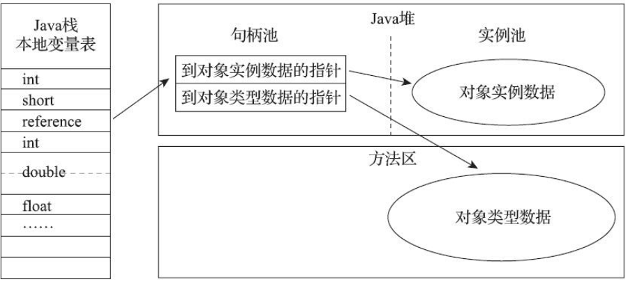
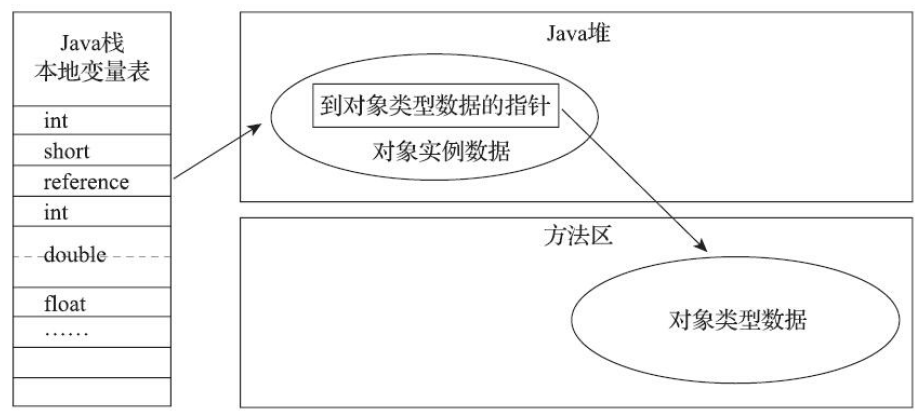
实战：OutOfMemoryError异常
注： 书中介绍了很多实战经验，这里仅记录一些经验相关事项，具体实例代码参考书中详细说明
本节实战的主要目的有两个：
- 通过代码验证《Java虚拟机规范》中描述的各个运行时区域存储的内容
- 遇到实际的内存溢出异常时，能够根据异常的提示信息迅速得知时哪个区域的内存溢出，知道怎样的代码可能会导致这些区域内存溢出，以及出现这些异常后该如何处理。
Java堆溢出
根本原因： Java堆用于存储对象实例，只要不断创建对象，并且保证GC Roots到对象之间有可达路径来避免垃圾回收机制清除这些对象，那么随着对象数量增加，总容量触及最大堆的容量限制后就会产生内存溢出异常。
常规处理方法：
- 先通过内存映像分析工具（如Eclipse Memory Analyzer）对Dump出来的堆转存储快照进行分析，首先确认内存中导致的OOM的对象是否时必要的，也就是到底时出现了 内存泄露（Memory Leak） 还是 内存溢出（Memory Overflow）
- 如果是内存泄漏，可以通过工具查看泄漏对象到GC Roots的引用链，找到泄漏对象是通过怎样的引用路径、与哪些GC Roots相关联，才导致垃圾收集器无法回收，根据泄漏对象的类型信息以及它到GC Roots引用链的信息，一般可以比较准确的定位到这些对象的创建位置，进而找出产生内存泄漏的代码的具体位置。
- 如果不是内存泄漏，就是对象必须要存活的话，就要分析Java虚拟机堆参数（-Xmx与-Xms）设置，与机器内存相比，是否还是有上调的空间。再从代码上检查是否存在某些对象生命周期过长、持有状态时间过长、存储结构设计不合理等等，尽量减少程序运行期间的内存消耗。
虚拟机和本地方法栈溢出
《Java虚拟机规范》中描述了两种情况:
- 如果线程请求的栈深度大于虚拟机所允许的最大深度，将抛出StackOverflowError异常
- 如果虚拟机的栈内存允许动态扩展，当扩展栈容量无法申请到足够的内存时，将抛出OutOfMemoryError异常
通常默认参数，对于正常的调用（包括不能做尾递归优化的递归调用），默认深度（1000~2000）完全够用。如果建立过多线程导致的内存溢出，在不能减少线程数量或者更换64位虚拟机的情况下，就只能通过减少最大堆和减少栈容量 来换取更多的线程
方法区和运行时常量池溢出
方法区溢出也是一种常见的内存溢出异常，一个类如果要被垃圾收集器回收，要达成的条件比较苛刻。
在JDK8以后，永久代便完全退出了历史舞台，元空间作为其替代者登场，HotSpot提供了一些参数作为原空间的防御措施，主要包括：
- -XX: MaxMetaspaceSize: 设置元空间最大值，默认是-1，即不限制，或者说只受限于本地内存大小
- -XX: MetaspaceSize：指定元空间初始空间大小，以字节为单位，达到该值就会触发垃圾收集器进行类型卸载，同时收集器会对该值进行调整：如果释放了大量的空间，就适当降低该值；如果释放了很少的空间，那么在不超过XX: MaxMetaspaceSize（如果设置了的话）情况下，适当提高该值
- -XX: MinMetaspaceFreeRatio：作用是在垃圾收集器之后控制最小的元空间剩余容量的百分比，可减少因为元空间不足导致的垃圾收集的频率。类似的还有
-XX: MinMetaspaceFreeRatio控制最大的元空间剩余容量的百分比。
本机直接内存溢出
注： 至少本人目前从来没有直接接触到在Java程序层面涉及到的直接内存分配的场景，所以这节不作记录。
第三章 垃圾收集器与内存分配策略
对象已死
关于引用计数算法
可以通过一个循环引用的Java程序实例就可以从侧面判定出，Java虚拟机并不是通过引用计数算法来判断对象是否存活的。
可达性分析算法
当前主流的商用程序语言的内存管理子系统，都是通过 可达性分析(Reachability Analysis) 算法来判定对象是否存活的。
基本思想： 通过一系列称为“GC Roots”的根对象作为起始点集，从这些点开始，根据引用向下搜索，搜索过程所走的路径称之为“引用链”（Reference Chain），如果某个对象到GC Roots间没有任何引用链（Reference Chain），如果某个对象到GC Roots间没有任何引用链相连，或者说（图论）从GC Roots到这个对象不可达时，则证明此对象时不可能再引用的。
Java技术体系中，可固定作为GC Roots对象包括以下几种类型：
- 在虚拟机栈（栈帧中的本地变量表）中引用的对象，譬如各个线程被调用的方法堆栈中使用到的参数、局部变量、临时变量。
- 在方法区中 类静态属性 引用的对象，譬如Java类的引用类型静态变量
- 在本地方法栈中JNI（即通常所说的Native方法）引用的对象。
- Java虚拟机内部的引用，如基本数据类型对应的Class对象，一些常驻的异常对象（比如NullPointException、OutOfMemoryError）等，还有系统类加载器。
- 所有被同步锁（synchronized关键字）持有的对象。
- 反映Java虚拟机内部情况的JMXBean、JVMTI中注册的回调、本地代码缓存等。
除了这些固定GC Roots集合以外，根据用户所选用的垃圾收集器以及当前回收的内存区域不同，还可以有其它对象“临时性”地加入，共同构成完整的GC Roots集合。譬如后文将会提到的 分代收集 和 局部回收（Partial GC）
再谈引用
在JDK1.2之后，Java对引用的概念进行了扩充，将引用分为 强引用（Strongly Re-ference）、软引用（Soft Reference）、弱引用（Weak Reference）、和 虚引用（Phantom Reference） 这4种，这4种引用强度依次逐渐减弱。
- 强引用是最传统的“引用”的定义，是指在程序代码之中普遍存在的引用赋值，即类似“Object obj=new Object()”这种引用关系。无论任何情况下，只要强引用关系还存在，垃圾收集器就永远不会回收掉被引用的对象。
- 软引用是用来描述一些还有用，但非必须的对象。只被软引用关联着的对象，在系统将要发生内存溢出异常前，会把这些对象列进回收范围之中进行第二次回收，如果这次回收还没有足够的内存，才会抛出内存溢出异常。在JDK 1.2版之后提供了SoftReference类来实现软引用。
- 弱引用也是用来描述那些非必须对象，但是它的强度比软引用更弱一些，被弱引用关联的对象只能生存到下一次垃圾收集发生为止。当垃圾收集器开始工作，无论当前内存是否足够，都会回收掉只被弱引用关联的对象。在JDK 1.2版之后提供了WeakReference类来实现弱引用。
- 虚引用也称为“幽灵引用”或者“幻影引用”，它是最弱的一种引用关系。一个对象是否有虚引用的存在，完全不会对其生存时间构成影响，也无法通过虚引用来取得一个对象实例。 为一个对象设置虚引用关联的唯一目的只是为了能在这个对象被收集器回收时收到一个系统通知。 在JDK 1.2版之后提供了PhantomReference类来实现虚引用。
生存还是死亡
要真正宣告一个对象死亡，至少要经历两次标记的过程：
- 如果对象在进行可达性分析后发现没有与GC Roots相连接的引用链，那他将会被第一次标记
- 随后进行一次筛选，筛选的条件是次对象是是否必要执行finalize()方法。假如对象没有覆盖finalize()方法，或者finalize()方法已经被虚拟机调用过，那么虚拟机将这两种情况都视为“没有必要执行”。
回收方法区
《Java虚拟机规范》中提到过可以不要求虚拟机在方法区中实现垃圾收集器。
方法区的垃圾收集主要回收两个部分： 废弃的常量和不再使用的类型
- 回收废弃常量与回收Java堆中的对象非常相似，如果没有任何字符串对象引用常量池中的常量，且虚拟机中也没有其它地方引用这个字面量。如果此时发生内存回收，而且垃圾收集器判定必要的话，则这个常量会被回收。
- 判定一个类型是否属于“不再被使用的类”的条件就比较苛刻，需要同时满足下面三个条件：
- 该类所有的实例都已经被回收，也就是Java堆中不存在该类及其任何派生子类的实例
- 加载该类的类加载器已经被回收，这个条件除非是经过精心设计的可替换类加载器的场景，如OSGi、JSP的重加载等，否则通常是很难达成的
- 该类对应的java.lang.Class对象没有被任何地方引用，无法再任何地方通过反射访问该类。
垃圾收集算法
分代收集理论
两个分代假说：
- 弱分代假说（Weak Generational Hypothesis ）：绝大多数对象都是朝生夕灭的。
- 强分代假说（String Generational Hypothesis）：熬过越多次垃圾收集过程的对象就越难以消亡。
这两个分代假说共同奠定了多款常用的垃圾收集器的一致的设计原则：收集器应该将Java堆划分出不同的区域，然后将回收对象一句其年龄（年龄即对象熬过垃圾收集的过程的次数）分配到不同的区域之中存储。
在Java堆划分出不同的区域之后，垃圾收集器才可以每次只回收其中某一个或者某些部分的区域——因而才有了 “Minor GC”“Major GC”“Full GC” 这样的回收类型的划分；也才能够针对不同的区域安排与里面存储对象存亡特征相匹配的垃圾收集算法——因而发展出了 “标记-复制算法”“标记-清除算法”“标记-整理算法” 等针对性的垃圾收集算法。
通常意义下，直接可以按照不同内存区域中的对象，直接回收，但是往往存在一个明显的困难： 对象不是孤立的，对象之间会存在跨代引用，为了解决这个问题，就需要对分代收集理论添加第三条经验法则：
- 跨代引用假说（Intergenrational Reference Hypothesis）：跨代引用相对于同代引用来说仅占极少数。
统一定义：
- 部分收集（Partial GC）：指 目标不是完整收集整个Java堆的垃圾收集，其中又分为
- 新生代收集（Minor GC/Young GC）：指目标只是新生代的垃圾收集。
- 老年代收集（Major GC/Old GC）：指目标只是老年代的垃圾收集。 目前只有CMS收集器会有单独收集老年代的行为。另外请注意“Major GC”这个说法现在有点混淆，在不同资料上常有不同所指，读者需按上下文区分到底是指老年代的收集还是整堆收集。
- 混合收集（Mixed GC）：指目标是 收集整个新生代以及部分老年代的垃圾收集。目前只有G1收集器会有这种行为
- 整堆收集（Full GC）：收集整个Java堆和方法区的垃圾收集
标记-清除算法
算法分为 “标记”和“清除” 两个阶段：首先标记出所有需要回收的对象，在标记完成后，统一回收掉所有被标记的对象，也可以反过来，标记存活的对象，统一回收所有未被标记的对象。
该算法主要的两个问题：
- 第一个是执行效率不稳定，如果Java堆中包含大量对象，而且其中大部分是需要被回收的，这时必须 进行大量标记和清除的动作，导致标记和清除两个过程的执行效率都随对象数量增长而降低。
- 第二个是 内存空间的碎片化问题，标记、清除之后会产生大量不连续的内存碎片，空间碎片太多可能会导致当以后在程序运行过程中需要分配较大对象时无法找到足够的连续内存而不得不提前触发另一次垃圾收集动作。
标记-复制算法
“半区复制”（Semispace Copying）的垃圾收集算法，它将可用内存按容量划分为大小相等的两块，每次只使用其中的一块。当这一块的内存用完了，就将还存活着的对象复制到另外一块上面，然后再把已使用过的内存空间一次清理掉。
该算法改进-Appel式回收
称为“Appel式回收”。HotSpot虚拟机的Serial、ParNew等新生代收集器均采用了这种策略来设计新生代的内存布局。
Appel式回收的具体做法是：把新生代分为一块较大的Eden空间和两块较小的Survivor空间，每次分配内存只使用Eden和其中一块Survivor。发生垃圾搜集时，将Eden和Survivor中仍然存活的对象一次性复制到另外一块Survivor空间上，然后直接清理掉Eden和已用过的那块Survivor空间。HotSpot虚拟机默认Eden和Survivor的大小比例是8∶1，也即每次新生代中可用内存空间为整个新生代容量的90%（Eden的80%加上一个Survivor的10%），只有一个Survivor空间，即10%的新生代是会被“浪费”的。
特例： Appel式回收还有一个充当罕见情况的“逃生门”的安全设计，当Survivor空间不足以容纳一次Minor GC之后存活的对象时，就需要依赖其他内存区域（实际上大多就是老年代）进行分配担保（Handle Promotion）。
标记-整理算法
1974年Edward Lueders提出了另外一种有针对性的“标记-整理”（Mark-Compact）算法，其中的标记过程仍然与“标记-清除”算法一样，但后续步骤不是直接对可回收对象进行清理，而是让所有存活的对象都向内存空间一端移动，然后直接清理掉边界以外的内存，“标记-整理”算法的示意图如图所示：
HotSpot的算法细节实现
注： 这一节非常琐碎，对算法实现细节做了很多阐述，核心就是怎么高效的收集？与之带来的问题基本上是一环套一环的，可以暂时先了解，如遇到特定场景、特定问题之后，再回过头来啃一啃这里面的实现。暂时，也就记录一些名词，不去理解具体的实现细节。
根节点枚举
迄今为止，所有收集器在根节点枚举这一步骤时都是必须 暂停用户线程 的，因此毫无疑问根节点枚举与之前提及的整理内存碎片一样会面临相似的“Stop The World”的困扰。具体在HotSpot中的做法是：
使用一组称为 OopMap的数据结构 来达到这个目的。一旦类加载动作完成的时候，HotSpot就会把对象内什么偏移量上是什么类型的数据计算出来，在即时编译（见第11章）过程中，也会在特定的位置记录下栈里和寄存器里哪些位置是引用。这样收集器在扫描时就可以直接得知这些信息了，并不需要真正一个不漏地从方法区等GC Roots开始查找。
安全点
前面提到的OopMap存在一个问题： 可能导致引用关系变化，或者说导致OopMap内容变化的指令非常多，如果为每一条指令都生成对应的OopMap，那将会需要大量的额外存储空间，这样垃圾收集伴随而来的空间成本就会变得无法忍受的高昂。
实际上HotSpot也的确没有为每条指令都生成OopMap，前面已经提到，只是在“特定的位置”记录了这些信息，这些位置被称为安全点（Safepoint）。
安全点位置的选取基本上是以“是否具有让程序长时间执行的特征”为标准进行选定的，因为每条指令执行的时间都非常短暂，程序不太可能因为指令流长度太长这样的原因而长时间执行，“长时间执行”的最明显特征 就是 指令序列的复用，例如方法调用、循环跳转、异常跳转等都属于指令序列复用，所以只有具有这些功能的指令才会产生安全点。
对于安全点，另外一个需要考虑的问题是，如何在垃圾收集发生时让所有线程（这里其实不包括执行JNI调用的线程）都跑到最近的安全点，然后停顿下来。这里有两种方案可供选择：抢先式中断（Preemptive Suspension）和主动式中断（Voluntary Suspension）
安全区域
安全点机制保证了程序执行时，在不太长的时间内就会遇到可进入垃圾收集过程的安全点。但是，程序“不执行”的时候呢？
所谓的程序不执行就是没有分配处理器时间，典型的场景便是用户线程处于Sleep状态或者Blocked状态，这时候 线程无法响应虚拟机的中断请求，不能再走到安全的地方去中断挂起自己，虚拟机也显然不可能持续等待线程重新被激活分配处理器时间。 对于这种情况，就必须引入 安全区域（Safe Region） 来解决。
安全区域是指能够确保在某一段代码片段之中，引用关系不会发生变化，因此，在这个区域中任意地方开始垃圾收集都是安全的。我们也可以把安全区域看作被扩展拉伸了的安全点。
记忆集与卡表
诞生的背景
垃圾收集器在新生代中建立了名为记忆集（Remembered Set）的数据结构，用以避免把整个老年代加进GC Roots扫描范围。
记忆集是一种用于记录从非收集区域指向收集区域的指针集合的抽象数据结构。
写屏障
在HotSpot虚拟机里是通过写屏障（Write Barrier）技术维护卡表状态的。
并发的可达性分析
想解决或者降低用户线程的停顿，就要先搞清楚为什么必须在一个能保障一致性的快照上才能进行对象图的遍历？
我们引入三色标记（Tri-color M arking）作为工具来辅助推导，把遍历对象图过程中遇到的对象，按照“是否访问过”这个条件标记成以下三种颜色：
- 白色： 表示对象尚未被垃圾收集器访问过。显然在可达性分析刚刚开始的阶段，所有的对象都是白色的，若在分析结束的阶段，仍然是白色的对象，即代表不可达。
- 黑色： 表示对象已经被垃圾收集器访问过，且这个对象的所有引用都已经扫描过。黑色的对象代表已经扫描过，它是安全存活的，如果有其他对象引用指向了黑色对象，无须重新扫描一遍。黑色对象不可能直接（不经过灰色对象）指向某个白色对象。
- 灰色： 表示对象已经被垃圾收集器访问过，但这个对象上至少存在一个引用还没有被扫描过。
经典垃圾收集器
说明：使用“经典”二字是为了与几款目前仍处于实验状态，但执行效果上有革命性改进的高性能低延迟收集器区分开来，这些经典的收集器尽管已经算不上是最先进的技术，但它们曾在实践中千锤百炼，足够成熟，基本上可认为是现在到未来两、三年内，能够在商用生产环境上放心使用的全部垃圾收集器了。
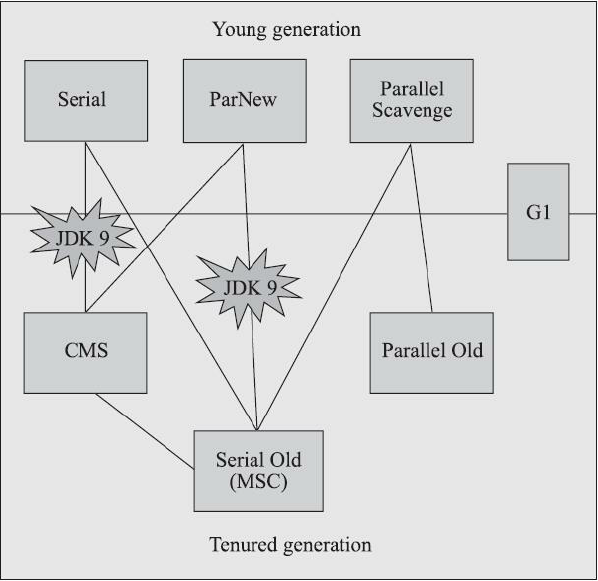
Serial收集器
这个收集器是一个单线程工作的收集器，但它的“单线程”的意义并不仅仅是说明它只会使用一个处理器或一条收集线程去完成垃圾收集工作，更重要的是强调在它进行垃圾收集时，必须暂停其他所有工作线程，直到它收集结束。
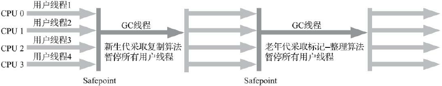
Serial收集器对于运行在客户端模式下的虚拟机来说是一个很好的选择
ParNew收集器
ParNew收集器实质上是Serial收集器的多线程并行版本，除了同时使用多条线程进行垃圾收集之外，其余的行为包括Serial收集器完全一致。
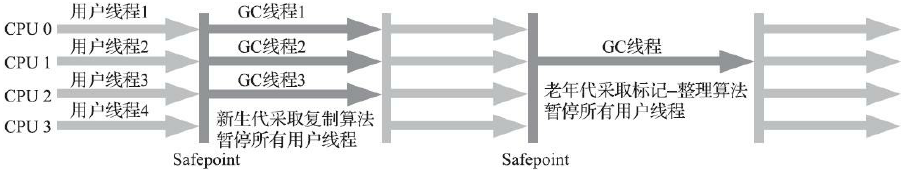
不少运行在服务端模式下的HotSpot虚拟机，尤其是JDK 7之前的遗留系统中首选的新生代收集器，其中有一个与功能、性能无关但其实很重要的原因是：除了Serial收集器外，目前只有它能与CMS收集器配合工作。
可以理解为：ParNew合并入CMS，成为它专门处理新生代的组成部分。ParNew可以说是HotSpot虚拟机中第一款退出历史舞台的垃圾收集器。
ParNew收集器是激活CMS后（使用-XX：+UseConcMarkSweepGC选项）的默认新生代收集器，也可以使用-XX：+/-UseParNewGC选项来强制指定或者禁用它。
并发与并行
- 并行（Parallel）： 并行描述的是多条垃圾收集器线程之间的关系，说明同一时间有多条这样的线程在协同工作，通常默认此时用户线程是处于等待状态。
- 并发（Concurrent）： 并发描述的是垃圾收集器线程与用户线程之间的关系，说明同一时间垃圾收集器线程与用户线程都在运行。由于用户线程并未被冻结，所以程序仍然能响应服务请求
Parallel Scavenge收集器
Parallel Scavenge收集器也是一款新生代收集器，它同样是基于标记-复制算法实现的收集器，也是能够并行收集的多线程收集器
Parallel Scavenge收集器的特点是它的关注点与其他收集器不同，CMS等收集器的关注点是尽可能地缩短垃圾收集时用户线程的停顿时间，而Parallel Scavenge收集器的目标则是达到一个可控制的吞吐量（Throughput）。所谓吞吐量就是处理器用于运行用户代码的时间与处理器总消耗时间的比值
Parallel Scavenge收集器提供了两个参数用于精确控制吞吐量，分别是控制最大垃圾收集停顿时间的-XX：MaxGCPauseMillis参数以及直接设置吞吐量大小的-XX：GCTimeRatio参数。
Serial Old收集器
Serial Old是Serial收集器的老年代版本，它同样是一个单线程收集器，使用标记-整理算法。这个收集器的主要意义也是供客户端模式下的HotSpot虚拟机使用。
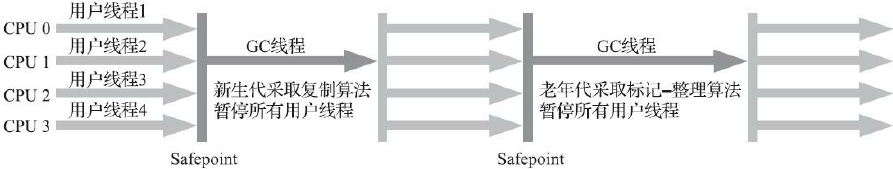
Parallel Old收集器
Parallel Old是Parallel Scavenge收集器的老年代版本，支持多线程并发收集，基于标记-整理算法实现。
由于老年代Serial Old收集器在服务端应用性能上的“拖累”，使用Parallel Scavenge收集器也未必能在整体上获得吞吐量最大化的效果。同样，由于单线程的老年代收集中无法充分利用服务器多处理器的并行处理能力，在老年代内存空间很大而且硬件规格比较高级的运行环境中，这种组合的总吞吐量甚至不一定比ParNew加CMS的组合来得优秀。
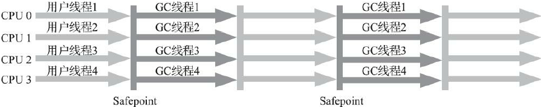
**在注重吞吐量或者处理器资源较为稀缺的场合，都可以优先考虑Parallel Scavenge加Parallel Old收集器这个组合。
**
CMS收集器
CMS（Concurrent Mark Sweep）收集器是一种以获取最短回收停顿时间为目标的收集器。基于标记-清除算法实现。
基本分为四个步骤：
- 1）初始标记（CMS initial mark）（Stop The World）：初始标记仅仅只是标记一下GCRoots能直接关联到的对象，速度很快；
- 2）并发标记（CMS concurrent mark）：并发标记阶段就是从GC Roots的直接关联对象开始遍历整个对象图的过程，这个过程耗时较长但是不需要停顿用户线程，可以与垃圾收集线程一起并发运行；
- 3）重新标记（CMS remark）（Stop The World）：而重新标记阶段则是为了修正并发标记期间，因用户程序继续运作而导致标记产生变动的那一部分对象的标记记录（详见3.4.6节中关于增量更新的讲解），这个阶段的停顿时间通常会比初始标记阶段稍长一些，但也远比并发标记阶段的时间短。
- 4）并发清除（CMS concurrent sweep）：清理删除掉标记阶段判断的已经死亡的对象，由于不需要移动存活对象，所以这个阶段也是可以与用户线程同时并发的。
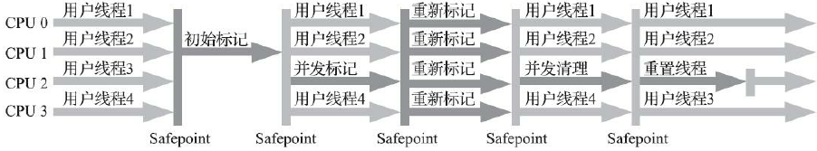
CMS至少有以下三个明显的缺点：
- CMS收集器对处理器资源非常敏感
- 由于CMS收集器无法处理“浮动垃圾”（Floating Garbage），有可能出现“Con-current Mode Failure”失败进而导致另一次完全“Stop The World”的Full GC的产生。
- CMS是一款基于“标记-清除”算法实现的收集器，就可能想到这意味着收集结束时会有大量空间碎片产生。空间碎片过多时，将会给大对象分配带来很大麻烦，往往会出现老年代还有很多剩余空间，但就是无法找到足够大的连续空间来分配当前对象，而不得不提前触发一次Full GC的情况。可以适当调高参数**-XX：CMSInitiatingOccupancyFraction的值来提高CMS的触发百分比，降低内存回收频率，获取更好的性能。
CMS收集器提供了一个-XX：+UseCMSCompactAtFullCollection开关参数（默认是开启的，此参数从JDK 9开始废弃**），用于在CMS收集器不得不进行Full GC时开启内存碎片的合并整理过程，由于这个内存整理必须移动存活对象，（在Shenandoah和ZGC出现前）是无法并发的。这样空间碎片问题是解决了，但停顿时间又会变长，因此虚拟机设计者们还提供了另外一个参数-XX：CMSFullGCsBeforeCompaction（此参数从JDK 9开始废弃），这个参数的作用是要求CM S收集器在执行过若干次（数量由参数值决定）不整理空间的Full GC之后，下一次进入Full GC前会先进行碎片整理（默认值为0，表示每次进入Full GC时都进行碎片整理）。
Garbage First收集器
面向堆内存任何部分来组成回收集（Collection Set，一般简称CSet）进行回收，衡量标准不再是它属于哪个分代，而是哪块内存中存放的垃圾数量最多，回收收益最大，这就是G1收集器的Mixed GC模式。
G1不再坚持固定大小以及固定数量的分代区域划分，而是把连续的Java堆划分为多个大小相等的独立区域（Region），每一个Region都可以根据需要，扮演新生代的Eden空间、Survivor空间，或者老年代空间。
Region中还有一类特殊的Humongous区域，专门用来存储大对象。G1认为只要大小超过了一个Region容量一半的对象即可判定为大对象。每个Region的大小可以通过参数-XX：G1HeapRegionSize设定，取值范围为1M B～32M B，且应为2的N次幂。
G1收集器之所以能建立可预测的停顿时间模型：是因为它将Region作为单次回收的最小单元，即每次收集到的内存空间都是Region大小的整数倍，这样可以有计划地避免在整个Java堆中进行全区域的垃圾收集。
低延迟垃圾收集器
衡量垃圾收集器的三项最重要的指标是：内存占用（Footprint）、吞吐量（Throughput）和延迟（Latency），三者共同构成了一个“不可能三角”。
Shenandoah收集器
ZGC收集器
ZGC和Shenandoah的目标是高度相似的，都希望在尽可能对吞吐量影响不太大的前提下，实现在任意堆内存大小下都可以把垃圾收集的停顿时间限制在十毫秒以内的低延迟。
选择合适的垃圾收集器
Epsilon收集器
从JDK 10开始，为了隔离垃圾收集器与Java虚拟机解释、编译、监控等子系统的关系，RedHat提出了垃圾收集器的统一接口，即JEP 304提案，Epsilon是这个接口的有效性验证和参考实现，同时也用于需要剥离垃圾收集器影响的性能测试和压力测试。
背景：
传统Java有着内存占用较大，在容器中启动时间长，即时编译需要缓慢优化等特点，这对大型应用来说并不是什么太大的问题，但对短时间、小规模的服务形式就有诸多不适。为了应对新的技术潮流，最近几个版本的JDK逐渐加入了提前编译、面向应用的类数据共享等支持。Epsilon也是有着类似的目标，如果读者的应用只要运行数分钟甚至数秒，只要Java虚拟机能正确分配内存，在堆耗尽之前就会退出，那显然运行负载极小、没有任何回收行为的Epsilon便是很恰当的选择。
收集器的权衡
我们应该如何选择一款适合自己应用的收集器呢？这个问题的答案主要受以下三个因素影响：
- 应用程序的主要关注点是什么？
- 如果是数据分析、科学计算类的任务，目标是能尽快算出结果，那吞吐量就是主要关注点；
- 如果是SLA应用，那停顿时间直接影响服务质量，严重的甚至会导致事务超时，这样延迟就是主要关注点；
- 而如果是客户端应用或者嵌入式应用，那垃圾收集的内存占用则是不可忽视的。
- 运行应用的基础设施如何？譬如硬件规格，要涉及的系统架构是x86-32/64、SPARC还是ARM /Aarch64；处理器的数量多少，分配内存的大小；选择的操作系统是Linux、Solaris还是Windows等。
- 使用JDK的发行商是什么？版本号是多少？是ZingJDK/Zulu、OracleJDK、Open-JDK、OpenJ9抑或是其他公司的发行版？该JDK对应了《Java虚拟机规范》的哪个版本？
虚拟机及垃圾收集器日志
阅读分析虚拟机和垃圾收集器的日志是处理Java虚拟机内存问题必备的基础技能，垃圾收集器日志是一系列人为设定的规则，多少有点随开发者编码时的心情而定，没有任何的“业界标准”可言，换句话说，每个收集器的日志格式都可能不一样。
在JDK 9以前，HotSpot并没有提供统一的日志处理框架，虚拟机各个功能模块的日志开关分布在不同的参数上，日志级别、循环日志大小、输出格式、重定向等 设置在不同功能上都要单独解决。
直到JDK 9，这种混乱不堪的局面才终于消失，HotSpot所有功能的日志都收归到了“-Xlog”参数上
几个例子：
- 查看GC基本信息，在JDK 9之前使用-XX：+PrintGC，JDK 9后使用-Xlog：gc
- 查看GC详细信息，在JDK 9之前使用-XX：+PrintGCDetails，在JDK 9之后使用-X-log：gc*
- 查看GC前后的堆、方法区可用容量变化，在JDK 9之前使用-XX：+PrintHeapAtGC，JDK 9之后使用-Xlog：gc+heap=debug
- 查看GC过程中用户线程并发时间以及停顿的时间，在JDK 9之前使用-XX：+Print-GCApplicationConcurrentTime以及-XX：+PrintGCApplicationStoppedTime，JDK 9之后使用-Xlog：safepoint：
- 查看收集器Ergonomics机制（自动设置堆空间各分代区域大小、收集目标等内容，从Parallel收集器开始支持）自动调节的相关信息。在JDK 9之前使用-XX：+PrintAdaptive-SizePolicy，JDK 9之后使用-Xlog：gc+ergo*=trace
- 查看熬过收集后剩余对象的年龄分布信息，在JDK 9前使用-XX：+PrintTenuring-Distribution，JDK 9之后使用-Xlog：gc+age=trace
垃圾收集器参数总结
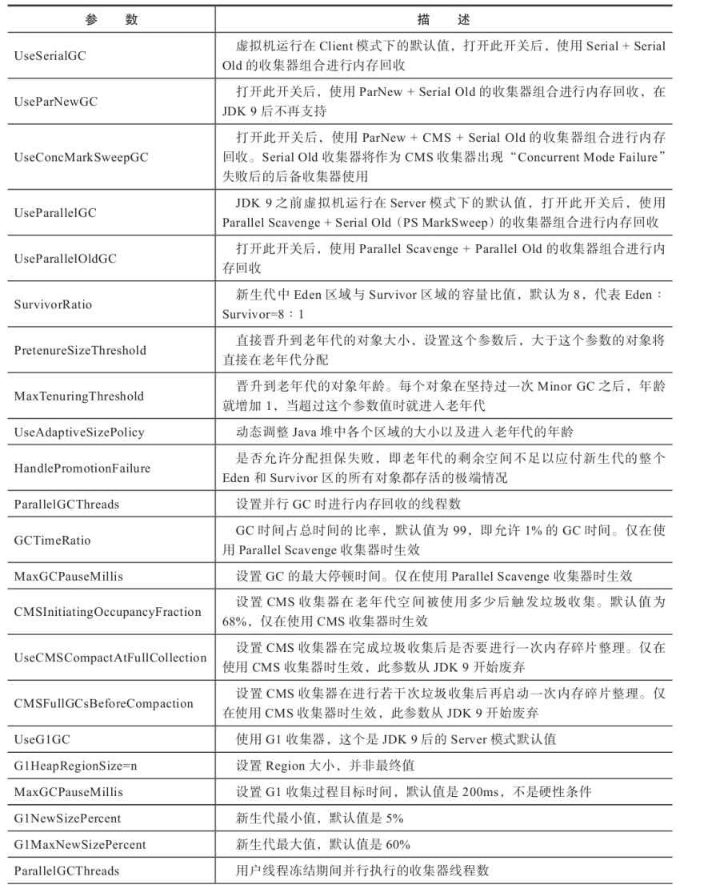
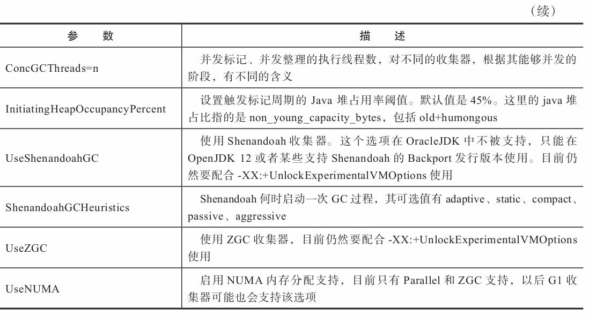
实战：内存分配与回收策略
Java技术体系的自动内存管理，最根本的目标是自动化地解决两个问题：自动给对象分配内存以及自动回收分配给对象的内存。
对象优先分配再Eden内存
大多数情况下，对象再新生代Eden区中分配。当Eden区没有足够空间进行分配时，虚拟机将发起一次Minor GC。
HotSpot虚拟机提供了 -XX: +PrintGCDetails 这个收集器参数日志，告诉虚拟机在发生垃圾收集行为时打印内存回收日志，并且在进程退出的时候出书当前的内存各个区域分配的情况。
1 | private static final int _1MB = 1024 * 1024; |
大对象直接进入老年代
HotSpot虚拟机提供了 -XX:PretenureSizeThreshold 参数，指定大于该设置值的对象直接在老年代分配，这样做的目的就是避免在Eden区以及两个Survivor区之间来回复制，产生大量的内存复制操作。
注意
-XX：PretenureSizeThreshold参数只对Serial和ParNew两款新生代收集器有效，HotSpot的其他新生代收集器，如Parallel Scavenge并不支持这个参数。如果必须使用此参数进行调优，可考虑ParNew加CMS的收集器组合。
1 | private static final int _1MB = 1024 * 1024; |
长期存活的对象将进入老年代
HotSpot虚拟机中多数收集器都采用了分代收集来管理堆内存，那内存回收时就必须能决策哪些存活对象应当放在新生代，哪些存活对象放在老年代中。
为做到这点，虚拟机给每个对象定义了一个对象年龄（Age）计数器，存储在对象头中（详见第2章）。对象通常在Eden区里诞生，如果经过第一次Minor GC后仍然存活，并且能被Survivor容纳的话，该对象会被移动到Survivor空间中，并且将其对象年龄设为1岁。对象在Survivor区中每熬过一次Minor GC，年龄就增加1岁，当它的年龄增加到一定程度（默认为15），就会被晋升到老年代中。对象晋升老年代的年龄阈值，可以通过参数 -XX：MaxTenuringThreshold 设置。
1 | private static final int _1MB = 1024 * 1024; |
动态对象年龄判定
为了能更好地适应不同程序的内存状况，HotSpot虚拟机并不是永远要求对象的年龄必须达到-XX：MaxTenuringThreshold才能晋升老年代，如果在Survivor空间中相同年龄所有对象大小的总和大于Survivor空间的一半，年龄大于或等于该年龄的对象就可以直接进入老年代，无须等到-XX：MaxTenuringThreshold中要求的年龄。
1 | private static final int _1MB = 1024 * 1024; |
空间分配担保
在发生Minor GC之前，虚拟机必须先检查老年代最大可用的连续空间是否大于新生代所有对象总空间，
- 如果这个条件成立，那这一次Minor GC可以确保是安全的。
- 如果不成立，则虚拟机会先查看-XX：HandlePromotionFailure参数的设置值是否允许担保失败（Handle Promotion Failure）；
- 如果允许，那会继续检查老年代最大可用的连续空间是否大于历次晋升到老年代对象的平均大小，
- 如果大于，将尝试进行一次Minor GC，尽管这次Minor GC是有风险的；
- 如果小于，或者-XX：HandlePromotionFailure设置不允许冒险，那这时就要改为进行一次Full GC。
注： 说白了，就是在MinorGC前，需要判定老年代要不要腾出空间来存储Survivor中的内存对象，如果老年代自己都不够，那就来一次Full GC腾出空间来与Survivor空间置换之后，再进行MinorGC。
第四章 虚拟机性能监控、故障处理工具
给一个系统定位问题的时候，知识、经验是关键基础，数据是依据，工具是运用知识处理数据的手段。
这里说的数据包括但不限于异常堆栈、虚拟机运行日志、垃圾收集器日志、线程快照（threaddump/javacore文件）、堆转储快照（heapdump/hprof文件）等。
基础故障处理工具
- 商业授权工具：主要是JMC（Java M ission Control）及它要使用到的JFR（Java Flight Recorder），JMC这个原本来自于JRockit的运维监控套件从JDK 7 Update 40开始就被集成到OracleJDK中，JDK 11之前都无须独立下载，但是在商业环境中使用它则是要付费的。
- 正式支持工具：这一类工具属于被长期支持的工具，不同平台、不同版本的JDK之间，这类工具可能会略有差异，但是不会出现某一个工具突然消失的情况。
- 实验性工具：这一类工具在它们的使用说明中被声明为“没有技术支持，并且是实验性质的”（Unsupported and Experimental）产品，日后可能会转正，也可能会在某个JDK版本中无声无息地消失。但事实上它们通常都非常稳定而且功能强大，也能在处理应用程序性能问题、定位故障时发挥很大的作用。
jps: 虚拟机进程状况工具
除了名字像UNIX的ps命令之外，它的功能也和ps命令类似：可以列出正在运行的虚拟机进程，并显示虚拟机执行主类（Main Class，main()函数所在的类）名称以及这些进程的本地虚拟机唯一ID（LVMID，Local Virtual M achine Identifier）。
作用： 如果同时启动了多个虚拟机进程，无法根据进程名称定位时，那就必须依赖jps命令显示主类的功能才能区分了。
jstat：虚拟机统计信息监视工具
jstat（JVM Statistics M onitoring Tool）是用于监视虚拟机各种运行状态信息的命令行工具。它可以显示本地或者远程虚拟机进程中的类加载、内存、垃圾收集、即时编译等运行时数据，在没有GUI图形界面、只提供了纯文本控制台环境的服务器上，它将是运行期定位虚拟机性能问题的常用工具。
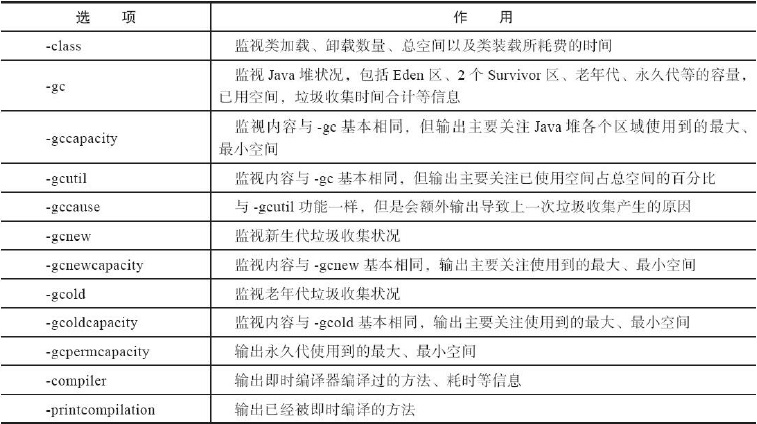
jinfo：Java配置信息工具
jinfo（Configuration Info for Java）的作用是实时查看和调整虚拟机各项参数。使用jps命令的-v参数可以查看虚拟机启动时显式指定的参数列表，但如果想知道未被显式指定的参数的系统默认值，除了去找资料外，就只能使用jinfo的-flag选项进行查询了。
jmap：Java内存映像工具
jmap（Memory Map for Java）命令用于生成堆转储快照（一般称为heapdump或dump文件）。如果不使用jmap命令，要想获取Java堆转储快照也还有一些比较“暴力”的手段：譬如在第2章中用过的-XX：+HeapDumpOnOutOfMemoryError参数，可以让虚拟机在内存溢出异常出现之后自动生成堆转储快照文件，通过-XX：+HeapDumpOnCtrlBreak参数则可以使用[Ctrl]+[Break]键让虚拟机生成堆转储快照文件，又或者在Linux系统下通过Kill -3命令发送进程退出信号“恐吓”一下虚拟机，也能顺利拿到堆转储快照。

jhat：虚拟机堆转储快照分析工具
JDK提供jhat（JVM Heap Analysis Tool）命令与jmap搭配使用，来分析jmap生成的堆转储快照。jhat内置了一个微型的HTTP/Web服务器，生成堆转储快照的分析结果后，可以在浏览器中查看。不过实事求是地说，在实际工作中，除非手上真的没有别的工具可用，否则多数人是不会直接使用jhat命令来分析堆转储快照文件的。
jstack：Java堆栈跟踪工具
jstack（Stack Trace for Java）命令用于生成虚拟机当前时刻的线程快照（一般称为threaddump或者javacore文件）。线程快照就是当前虚拟机内每一条线程正在执行的方法堆栈的集合，生成线程快照的目的通常是定位线程出现长时间停顿的原因，如线程间死锁、死循环、请求外部资源导致的长时间挂起等，都是导致线程长时间停顿的常见原因。
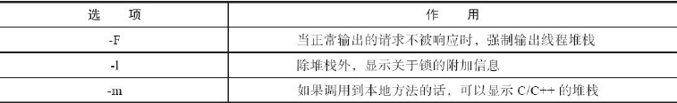
可视化故障处理工具
注：本小结介绍了几种集中可视化分析内存的方案，各有特色，值得仔细研究，这是理论与实践相结合的最佳实践。
JHSDB：基于服务代理的调试工具
JDK中提供了JCMD和JHSDB两个集成式的多功能工具箱，它们不仅整合了前面介绍的所有基础工具所能提供的专项功能，而且由于有着“后发优势”，能够做的往往比之前的老工具们更好、更强大。
注： 本小节实践我实在jdk9.0.4版本下完成的，尝试在jdk8下实验，确实如作者所述在sa-jdi.jar包中存在HSDB工具类，但是尝试直接运行了，但是出现了找不到windbg.dll动态链接库的错误。因此，直接更换为jdk9运行。故而以下文字记录，基于本书介绍的同时，涉及测试的结果，均是个人实验记录所得，可能跟原书中表现有些许差异。
介绍
JHSDB是一款基于服务性代理（Serviceability Agent，SA）实现的进程外调试工具。
服务性代理是HotSpot虚拟机中一组用于映射Java虚拟机运行信息的、主要基于Java语言（含少量JNI代码）实现的API集合。服务性代理以HotSpot内部的数据结构为参照物进行设计，把这些C++的数据抽象出Java模型对象，相当于HotSpot的C++代码的一个镜像。通过服务性代理的API，可以在一个独立的Java虚拟机的进程里分析其他HotSpot虚拟机的内部数据，或者从HotSpot虚拟机进程内存中dump出来的转储快照里还原出它的运行状态细节。
测试代码(跟原书中略有差别，主要体现在变量命名的差异)，这片代码主要用于调试，三个对象分布在内存哪里？
1 | /** |
答案： 根据前面的理论学习，不难分析出：staticObj随着Test的类型信息存放在方法区，instanceObj随着Test的对象实例存放在Java堆，localObject则是存放在foo()方法栈帧的局部变量表中。
但是实际是这样的吗？
由于JHSDB本身对压缩指针的支持存在很多缺陷，建议用64位系统的读者在实验时禁用压缩指针，另外为了后续操作时可以加快在内存中搜索对象的速度，也建议读者限制一下Java堆的大小。本例中，作者建议采用的运行参数如下：
1 | -Xmx10m -XX:+UseSerialGC -XX:-UseCompressedOops |
程序执行后，通过jps查到测试程序进程ID，从下面片段中得知，15986就是我们测试程序所要的进程id
1 | C:\Users\kemi>jps -l |
紧接着，通过jhsdb命令，来运行可视化界面：
1 | jhsdb hsdb --pid 8588 |
运行之后，界面如下图所示
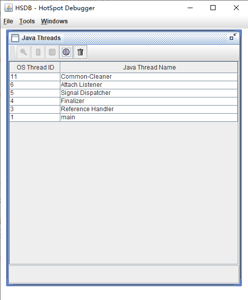
从运行效果来看其实生成的就是一个Swing的小程序，这点我们从jdk8的sa-jdi.jar包中的目录结构也能看出来
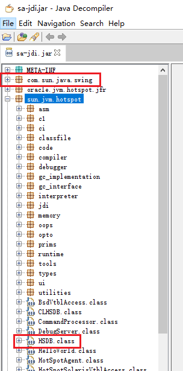
点击菜单：Tools->Heap Parameters，就可以看到堆内存分配布局，由于作者的运行参数中 指定了使用的是Serial收集器，图中我们看到了典型的Serial的分代内存布局，Heap Parameters窗口中清楚列出了新生代的Eden、S1、S2和老年代的容量（单位为字节）以及它们的虚拟内存地址起止范围。
实际如下所示：
1 | Heap Parameters: |
其中：0x0000026f4d200000 就是起始虚拟内存地址（eden新生代起始），0x0000026f4d500000 就是结束虚拟地址（To Survivor结束）
再通过菜单Windows->Console窗口，打开命令行，使用scanoops命令在Java堆的新生代（从Eden起始地址到To Survivor结束地址）范围内查找ObjectHolder的实例
1 | scanoops 0x0000026f4d200000 0x0000026f4d500000 cc.nimbusk.jhsdb.JHSDBTest$ObjectHolder |
得到结果：
1 |
|
注： 这里跟书中作者有点区别，原书作者实例中，通过jps运行之后，得到的进程ID是没有包路径的，但是我自己实验的时候，发现是有的。这个在后面的scanoops命令使用的时候有用。如果不带包路径的话，在内存中是找不到的，会提示你 No such type
我们从结果分析一下，确实在内存中找到三个ObjectHolder对象，我们再看看第一行地址分布：
这三个对象的地址前缀都是：0x0000026f4d2，而我们通过前面的Heap Parameters拿到所有分代内存分布发现，只有Eden区域地址（eden [0x0000026f4d200000,0x0000026f4d2d57c8,0x0000026f4d4b0000)），这也就顺带验证了：一般情况下新对象在Eden中创建的分配规则。
再使用：Tools->Inspector 功能确认一下这三个地址中存放的对象：
Inspector为我们展示了对象头和指向对象元数据的指针，里面包括了 Java类型的名字、继承关系、实现接口关系，字段信息、方法信息、运行时常量池的指针、内嵌的虚方法表（vtable）以及接口方法表（itable）等。 由于我们的确没有在ObjectHolder上定义过任何字段，所以图中并没有看到任何实例字段数据，读者在做实验时不妨定义一些不同数据类型的字段，观察它们在HotSpot虚拟机里面是如何存储的。
注： 实际上，目前在实验的时候，发现点不开_metadata._klass: InstanceKlass for cc/nimbusk/jhsdb/JHSDBTest$ObjectHolder，看不到里面具体的内容，后台报了一个数组越界的错误。尝试将JHSDBTest类包路径去除，重新运行发现又报了一个空指针错误。。。嗯，看来这个swing问题不少，暂时没去研究了
接下来要根据堆中对象实例地址找出引用它们的指针，原本JHSDB的Tools菜单中有ComputeReverse Ptrs来完成这个功能，但是Swing本身可能会报空指针异常，这里直接通过命令来实现，revptrs命令后跟上第一个对象的地址。
1 | // 这里内存地址跟前文中看到的不一样，是因为，中途切换环境，我重新运行了。实际实验的时候，同样的方法，按照实际分配的地址即可。这里不再赘述 |
得到结果：
1 | hsdb> revptrs 0x00000119d44ca868 |
在通过Inspector查找这个地址：0x00000119d44c9488，得到如下图所示：
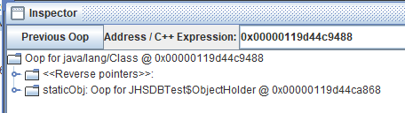
果然找到了一个引用该对象的地方，是在一个 java.lang.Class 的实例里，并且给出了这个实例的地址，通过Inspector查看该对象实例，可以清楚看到这确实是一个 java.lang.Class 类型的对象实例，里面有一个名为 staticObj 的实例字段。（在JDK 7以前，即还没有开始“去永久代”行动时，这些静态变量是存放在永久代上的，JDK 7起把静态变量、字符常量这些从永久代移除出去。）
从《Java虚拟机规范》所定义的概念模型来看，所有Class相关的信息都应该存放在方法区之中，但方法区该如何实现，《Java虚拟机规范》并未做出规定，这就成了一件允许不同虚拟机自己灵活把握的事情。JDK 7及其以后版本的HotSpot虚拟机选择把静态变量与类型在Java语言一端的映射Class对象存放在一起，存储于Java堆之中，从我们的实验中也明确验证了这一点。
接着查找第二个对象实例：
1 | hsdb> revptrs 0x00000119d44ca890 |
这次找到一个类型为JHSDBTest$Test的对象实例，在Inspector中该对象实例显示如图所示：
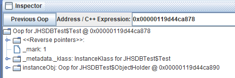
这个结果完全符合我们的预期，第二个ObjectHolder的指针是在Java堆中JHSDBTest$Test对象的instanceObj字段上。
我们查找第三个对象的时候，发现：
1 | hsdb> revptrs 0x00000119d44ca8a0 |
看来revptrs命令并不支持查找栈上的指针引用，不过没有关系，得益于我们测试代码足够简洁，人工也可以来完成这件事情。 在Java Thread窗口选中main线程后点击Stack Memory按钮查看该线程的栈内存，如图下图所示：
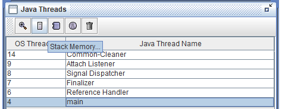
打开栈内存之后：
观察一个唯一的栈上的分配的内存，如下图所示：
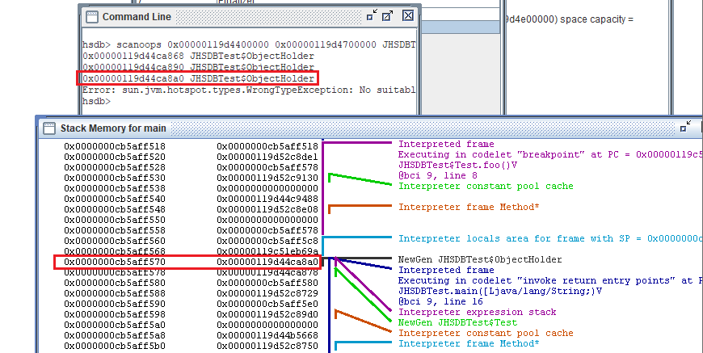
这个线程只有两个方法栈帧，尽管没有查找功能，但通过肉眼观察在地址0x0000000cb5aff570上的值正好就是0x00000119d44ca8a0，而且JHSDB在旁边已经自动生成注释，说明这里确实是引用了一个来自新生代的JHSDBTest$ObjectHolder对象。
至此，本次实验中三个对象均已找到，并成功追溯到引用它们的地方，也就实践验证了开篇中提出的这些对象的引用是存储在什么地方的问题。
JHSDB提供了非常强大且灵活的命令和功能，本节的例子只是其中一个很小的应用，读者在实际开发、学习时，可以用它来调试虚拟机进程或者dump出来的内存转储快照，以积累更多的实际经验。
关于其它的相关描述，查看fx大神的描述rednaxelafx
JConsole:Java监视与管理控制台
JConsole（Java Monitoring and Management Console）是一款基于JMX（Java Manage-mentExtensions）的可视化监视、管理工具。它的主要功能是通过JMX的MBean（Managed Bean）对系统进行信息收集和参数动态调整。
JMX是一种开放性的技术，不仅可以用在虚拟机本身的管理上，还可以运行于虚拟机之上的软件中，典型的如中间件大多也基于JMX来实现管理与监控。虚拟机对JMX MBean的访问也是完全开放的，可以使用代码调用API、支持JMX协议的管理控制台，或者其他符合JMX规范的软件进行访问。
启动JConsole
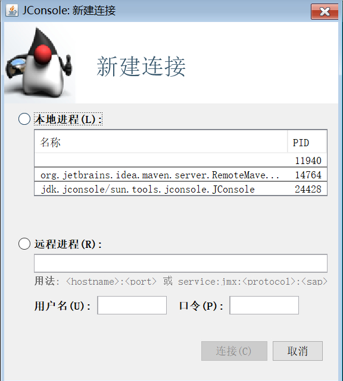
通过JDK/bin目录下的jconsole.exe启动JConsole后，会自动搜索出本机运行的所有虚拟机进程，而不需要用户自己使用jps来查询，如图4-10所示。双击选择其中一个进程便可进入主界面开始监控。JMX支持跨服务器的管理，也可以使用下面的“远程进程”功能来连接远程服务器，对远程虚拟机进行监控。如下图所示：
内存监控
“内存”页签的作用相当于可视化的jstat命令，用于监视被收集器管理的虚拟机内存（被收集器直接管理的Java堆和被间接管理的方法区）的变化趋势。
测试代码：
1 | /** |
解读：
程序运行后，在“内存”页签中可以看到内存池Eden区的运行趋势呈现折线状，如图4-12所示。监视范围扩大至整个堆后，会发现曲线是一直平滑向上增长的。从柱状图可以看到，在1000次循环执行结束，运行了System.gc()后，虽然整个新生代Eden和Survivor区都基本被清空了，但是代表老年代的柱状图仍然保持峰值状态，说明被填充进堆中的数据在System.gc()方法执行之后仍然存活。
这里作者给我们提出了两个问题：
- 虚拟机启动参数只限制了Java堆为100M B，但没有明确使用-Xmn参数指定新生代大小，读者能否从监控图中估算出新生代的容量？
- 为何执行了System.gc()之后，图4-12中代表老年代的柱状图仍然显示峰值状态，代码需要如何调整才能让System.gc()回收掉填充到堆中的对象？
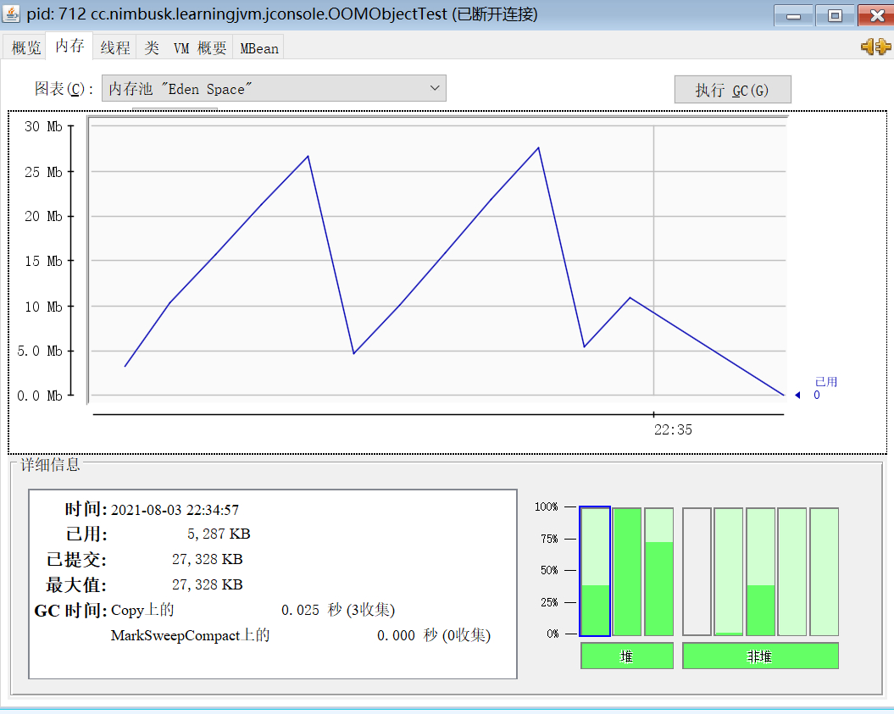
问题1答案：图4-12显示Eden空间为27328KB，因为没有设置-XX：SurvivorRadio参数，所以Eden与Survivor空间比例的默认值为8∶1，因此整个新生代空间大约为27328KB×125%=34160KB。
问题2答案：执行System.gc()之后，空间未能回收是因为List
注： 问题一答案容易理解，实际就是这么分配的，如果想要验证可以通过调整SurvivorRadio参数来调整；问题2，我们来通过稍微修改一下上述OOMObjectTest代码片段，来看看是不是如作者所说：
代码片段如下，只将main方法中相关代码做了调整，其余不变
1 | public static void main(String[] args) throws Exception { |
此时运行监控结过，如下图所示：
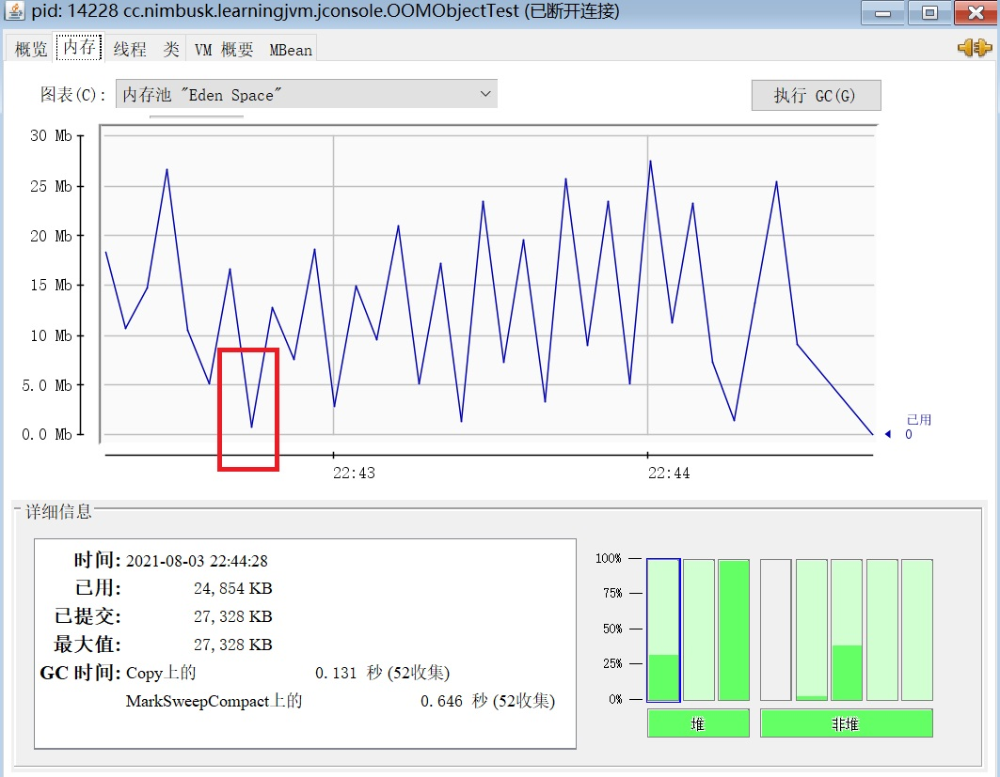
从图中可以看出，确实完全回收了（留有少部分，毕竟还有其它区域代码的实例需要占用空间）
线程监控
如果说JConsole的“内存”页签相当于可视化的jstat命令的话，那“线程”页签的功能就相当于可视化的jstack命令了，遇到线程停顿的时候可以使用这个页签的功能进行分析。前面讲解jstack命令时提到 线程长时间停顿的主要原因有等待外部资源（数据库连接、网络资源、设备资源等）、死循环、锁等待等。
示例代码：
1 | /** |
程序运行后，首先在“线程”页签中选择main线程，如图4-13所示。堆栈追踪显示BufferedReader的readBytes()方法正在等待System.in的键盘输入，这时候线程为Runnable状态，Runnable状态的线程仍会被分配运行时间，但readBytes()方法检查到流没有更新就会立刻归还执行令牌给操作系统，这种等待只消耗很小的处理器资源。
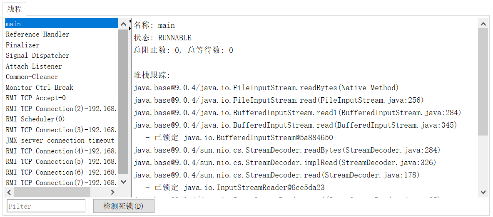
接着监控testBusyThread线程，又如下图所示。testBusyThread线程一直在执行空循环，从堆栈追踪中看到一直在MonitoringTest.java代码的41行停留，41行的代码为while(true)。这时候线程为Runnable状态，而且没有归还线程执行令牌的动作，所以会在空循环耗尽操作系统分配给它的执行时间，直到线程切换为止，这种等待会消耗大量的处理器资源。
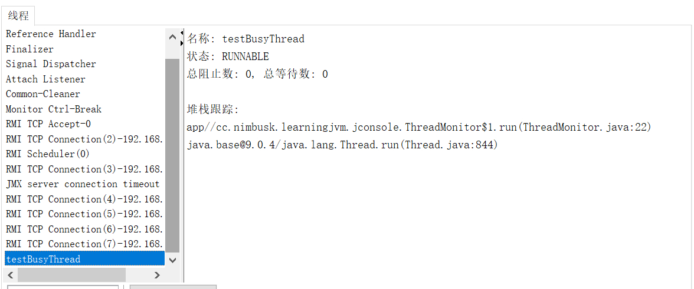
testLockThread线程在等待lock对象的notify()或notifyAll()方法的出现，线程这时候处于WAITING状态，在重新唤醒前不会被分配执行时间。 如下图所示：
testLockThread线程正处于正常的活锁等待中，只要lock对象的notify()或notifyAll()方法被调用，这个线程便能激活继续执行
死锁代码样例
代码示例：
1 | /** |
代码释意
这段代码开了200个线程去分别计算1+2以及2+1的值，理论上for循环都是可省略的，两个线程也可能会导致死锁，不过那样概率太小，需要尝试运行很多次才能看到死锁的效果。如果运气不是特别差的话，上面带for循环的版本最多运行两三次就会遇到线程死锁，程序无法结束。
根本原因
造成死锁的根本原
因是Integer.valueOf()方法出于减少对象创建次数和节省内存的考虑，会对数值为-128～127之间的Integer对象进行缓存（这是《Java虚拟机规范》中明确要求缓存的默认值，实际值可以调整，具体取决于java.lang.Integer.Integer-Cache.high参数的设置。），如果valueOf()方法传入的参数在这个范围之内，就直接返回缓存中的对象。也就是说代码中尽管调用了200次Integer.valueOf()方法，但一共只返回了两个不同的Integer对象。假如某个线程的两个synchronized块之间发生了一次线程切换，那就会出现线程A在等待被线程B持有的Integer.valueOf(1)，线程B又在等待被线程A持有的Integer.valueOf(2)，结果大家都跑不下去的情况。
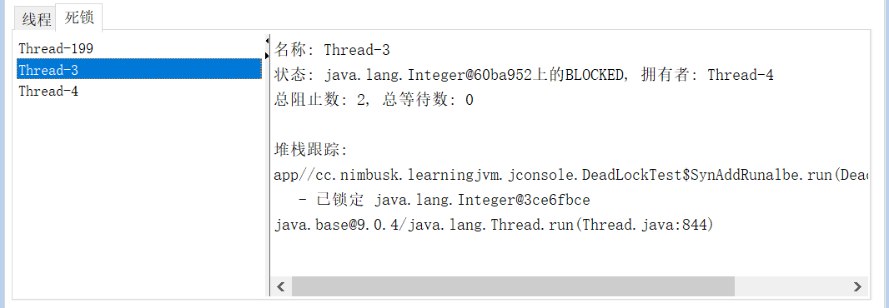
很清晰地显示，线程Thread-3在等待一个被线程Thread-4持有的Integer对象，而点击线程Thread-4则显示它也在等待一个被线程Thread-3持有的Integer对象，这样两个线程就互相卡住，除非牺牲其中一个，否则死锁无法释放。
VisualVM：多合-故障处理工具
VisualVM（All-in-One Java Troubleshooting Tool）是功能最强大的运行监视和故障处理程序之一，曾经在很长一段时间内是Oracle官方主力发展的虚拟机故障处理工具。Oracle曾在VisualVM的软件说明中写上了“All-in-One”的字样，预示着它除了 常规的运行监视、故障处理外，还将提供其他方面的能力，譬如性能分析（Profiling）。
相比其它收费第三方工具，VisualVM还有一个很大的优点：不需要被监视的程序基于特殊Agent去运行，因此它的通用性很强，对应用程序实际性能的影响也较小，使得它可以直接应用在生产环境中。
VisualVM兼容范围与插件安装
VisualVM基于NetBeans平台开发工具，所以一开始它就具备了通过插件扩展功能的能力，有了插件扩展支持，VisualVM可以做到：
- 显示虚拟机进程以及进程的配置、环境信息（jps、jinfo）。
- 监视应用程序的处理器、垃圾收集、堆、方法区以及线程的信息（jstat、jstack）。
- dump以及分析堆转储快照（jmap、jhat）。
- 方法级的程序运行性能分析，找出被调用最多、运行时间最长的方法。
- 离线程序快照：收集程序的运行时配置、线程dump、内存dump等信息建立一个快照，可以将快照发送开发者处进行Bug反馈。
- 其他插件带来的无限可能性。
用笔者的话来说
首次启动VisualVM后，读者先不必着急找应用程序进行监测，初始状态下的VisualVM并没有加载任何插件，虽然基本的监视、线程面板的功能主程序都以默认插件的形式提供，但是如果不在VisualVM上装任何扩展插件，就相当于放弃它最精华的功能，和没有安装任何应用软件的操作系统差不多。
独立安装的插件存储在VisualVM的根目录，譬如JDK 9之前自带的VisulalVM，插件安装后是放在JDK_HOME/lib/visualvm中的。
JDK 9之后VisulalVM形成了一个独立项目：VisualVM主页
插件安装非特殊场景，无需手动安装，在有网络连接的环境下，点击“工具->插件菜单”，在页签的“可用插件”及“已安装”中列举了当前版本VisualVM可以使用的全部插件，选中插件后在右边窗口会显示这个插件的基本信息，如开发者、版本、功能描述等。
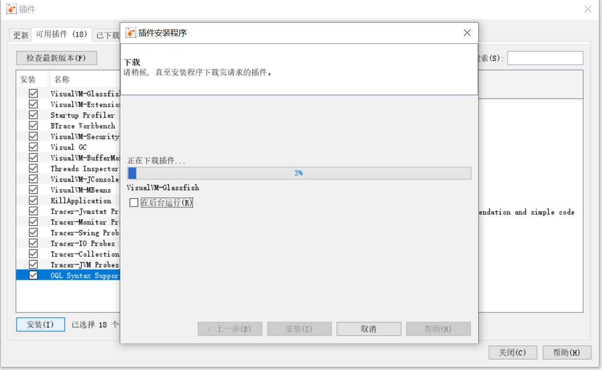
生成、浏览堆转储快照
在VisualVM中生成堆转储快照文件有两种方式，可以执行下列任一操作：
- 在“应用程序”窗口中右键单击应用程序节点，然后选择“堆Dump”。
- 在“应用程序”窗口中双击应用程序节点以打开应用程序标签，然后在“监视”标签中单击“堆Dump”。
生成堆转储快照文件之后，应用程序页签会在该堆的应用程序下增加一个以[heap-dump]开头的子节点，并且在主页签中打开该转储快照，如图4-20所示。如果需要把堆转储快照保存或发送出去，就应在heapdump节点上右键选择“另存为”菜单，否则当VisualVM关闭时，生成的堆转储快照文件会被当作临时文件自动清理掉。要打开一个由已经存在的堆转储快照文件，通过文件菜单中的“装入”功能，选择硬盘上的文件即可。
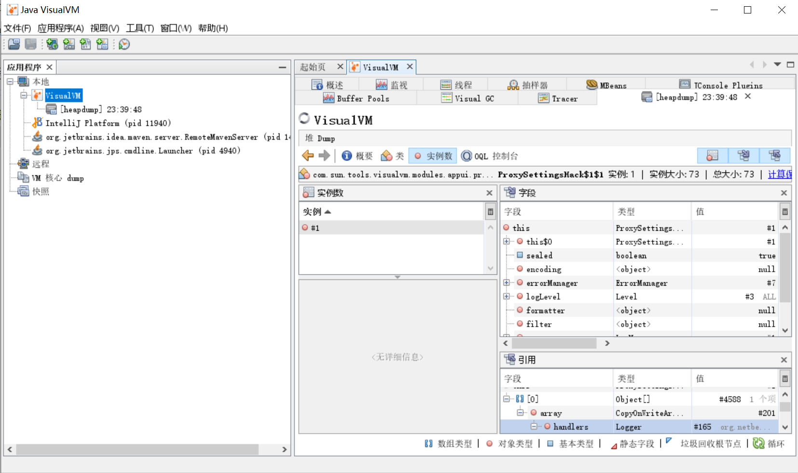
堆页签中的“摘要”面板可以看到应用程序dump时的运行时参数、System.getPro-perties()的内容、线程堆栈等信息；“类”面板则是以类为统计口径统计类的实例数量、容量信息；“实例”面板不能直接使用，因为VisualVM在此时还无法确定用户想查看哪个类的实例，所以需要通过“类”面板进入，在“类”中选择一个需要查看的类，然后双击即可在“实例”里面看到此类的其中500个实例的具体属性信息；“OQL控制台”面板则是运行OQL查询语句的，同jhat中介绍的OQL功能一样。如果读者想要了解具体OQL的语法和使用方法，可参见本书附录D的内容。
Java Mission Control：可持续在线的监控工具
Oracle Java SE Advanced & Suite与普通Oracle Java SE在功能上的主要差别是前者包含了一系列的监控、管理工具，譬如用于企业JRE定制管理的AMC（Java Advanced M anagement Console）控制台、JUT（Java Usage Tracker）跟踪系统，用于持续收集数据的JFR（Java Flight Recorder）飞行记录仪和用于监控Java虚拟机的JMC（Java M ission Control）。
这些功能全部都是需要商业授权才能在生产环境中使用，但根据Oracle Binary Code协议，在个人开发环境中，允许免费使用JMC和JFR，本节笔者将简要介绍它们的原理和使用。
JFR是一套内建在HotSpot虚拟机里面的监控和基于事件的信息搜集框架，与其他的监控工具（如JProfiling）相比，Oracle特别强调它“可持续在线”（Always-On）的特性。 JFR在生产环境中对吞吐量的影响一般不会高于1%（甚至号称是Zero Performance Overhead），而且JFR监控过程的开始、停止都是完全可动态的，即不需要重启应用。JFR的监控对应用也是完全透明的，即不需要对应用程序的源码做任何修改，或者基于特定的代理来运行。
HotSpot虚拟机插件及工具
开发团队曾经编写（或者收集）过不少虚拟机的插件和辅助工具，它们存放在HotSpot源码hotspot/src/share/tools目录下，包括（含曾经有过但新版本中已被移除的）：
- Ideal Graph Visualizer：用于可视化展示C2即时编译器是如何将字节码转化为理想图，然后转化为机器码的。
- Client Compiler Visualizer：用于查看C1即时编译器生成高级中间表示（HIR），转换成低级中间表示（LIR）和做物理寄存器分配的过程。
- MakeDeps：帮助处理HotSpot的编译依赖的工具。
- Project Creator：帮忙生成Visual Studio的.project文件的工具。
- LogCompilation：将-XX：+LogCompilation输出的日志整理成更容易阅读的格式的工具。
- HSDIS：即时编译器的反汇编插件。
HSDIS：JIT生成代码反汇编
《Java虚拟机规范》中的规定逐渐成为Java虚拟机实现的“概念模型”，即实现只保证与规范描述等效，而不一定是按照规范描述去执行。由于这个原因，我们在讨论程序的执行语义问题（虚拟机做了什么）时，在字节码层面上分析完全可行，但讨论程序的执行行为问题（虚拟机是怎样做的、性能如何）时，在字节码层面上分析就没有什么意义了，必须通过其他途径解决。
HSDIS是一个被官方推荐的HotSpot虚拟机即时编译代码的反汇编插件，它包含在HotSpot虚拟机的源码当中，在OpenJDK的网站3也可以找到单独的源码下载，但并没有提供编译后的程序。
HSDIS插件的作用是让HotSpot的-XX：+PrintAssembly指令调用它来把即时编译器动态生成的本地代码还原为汇编代码输出，同时还会自动产生大量非常有价值的注释，这样我们就可以通过输出的汇编代码来从最本质的角度分析问题。读者可以根据自己的操作系统和处理器型号，从网上直接搜索、下载编译好的插件，直接放到JDK_HOME/jre/bin/server目录（JDK 9以下）或JDK_HOME/lib/amd64/server（JDK 9或以上）中即可使用。
注： 这里我自己编译了一个64位windows的，运行jdk版本是：1.8.211
如果读者使用的是SlowDebug或者FastDebug版的HotSpot，那可以直接通过-XX：+PrintAssembly指令使用的插件；如果读者使用的是Product版的HotSpot，则还要额外加入一个-XX：+UnlockDiagnosticVMOptions参数才可以工作。
测试代码如下：
1 | package cc.nimbusk.learningjvm.hsdis; |
解读参数：
其中，参数-Xcomp是让虚拟机以编译模式执行代码，这样不需要执行足够次数来预热就能触发即时编译。两个-XX：CompileCommand的意思是让编译器不要内联sum()并且只编译sum()，-XX：+PrintAssembly就是输出反汇编内容。
作者运行结果：
1 | [Disassembling for mach='i386'] |
笔者运行结果：
看了一下，我是在64位环境下编译的，还是跟作者书中32位的有差距的，但是整体没什么问题。比如一个最明显的： ret 跟 retq ，为了更好的比较，我这里就都贴出来，但是后文中的分析还是摘录作者文章中分析示例
1 | CompilerOracle: dontinline *Bar.sum |
书中作者解读
虽然是汇编，但代码并不多，我们一句一句来阅读：
- mov%eax，-0x8000(%esp)：检查栈溢。
- push%ebp：保存上一栈帧基址。
- sub$0x18，%esp：给新帧分配空间。
- mov 0x8(%ecx)，%eax：取实例变量a，这里0x8(%ecx)就是ecx+0x8的意思，前面代码片段“[Constants]”中提示了“this：ecx=’test/Bar’”，即ecx寄存器中放的就是this对象的地址。偏移0x8是越过this对象的对象头，之后就是实例变量a的内存位置。这次是访问Java堆中的数据。
- mov$0x3d2fad8，%esi：取test.Bar在方法区的指针。
- mov 0x68(%esi)，%esi：取类变量b，这次是访问方法区中的数据。
- add%esi，%eax、add%edx，%eax：做2次加法，求a+b+c的值，前面的代码把a放在eax中，把b放在esi中，而c在[Constants]中提示了，“parm0：edx=int”，说明c在edx中。
- add$0x18，%esp：撤销栈帧。
- pop%ebp：恢复上一栈帧。
- test%eax，0x2b0100：轮询方法返回处的SafePoint。
- ret：方法返回。
笔者64位运行环境下结果比较
目前笔者能力有限，汇编的知识早已还给老师了。主要从[Verified Entry Point]下面看起，跟32位环境，以及作者并没有介绍示例代码运行的JDK环境，至少能看出来，在1.8下，hotspot运行在分配内存的时候，还是要多做了一些事情的。
JITWatch是HSDIS经常搭配使用的可视化的编译日志分析工具，为便于在JITWatch中读取，读
者可使用以下参数把日志输出到logfile文件：
1 | -XX:+UnlockDiagnosticVMOptions |
注： GitHub页面上有对应的release包使用，直接访问下载即可。重新修改参数之后，运行一下得到运行结果的log，这里贴一下我运行的
运行界面如下图所示（由于作者没有继续深入，暂时这块笔者暂定，后续有机会再补充详细设定）：
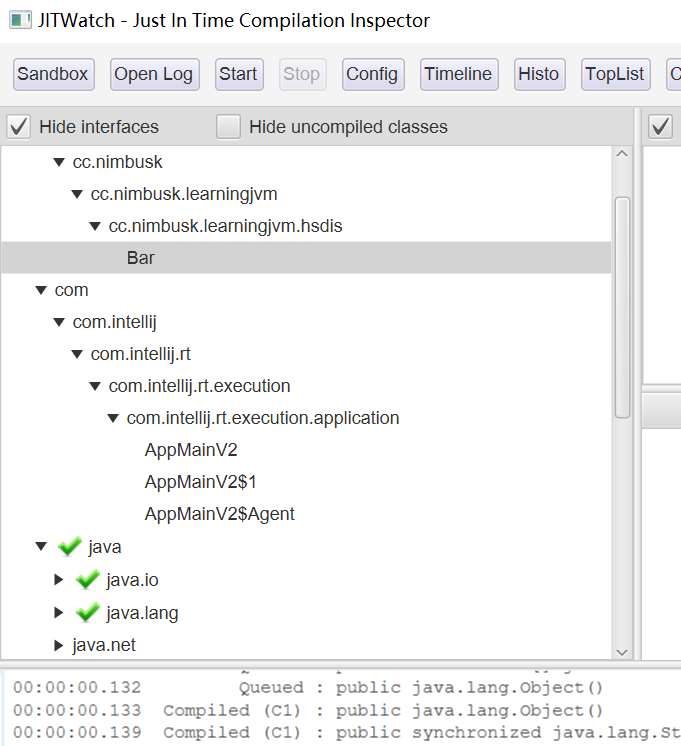
JITWatch详细使用
调优案例分析与实战
注： 作者在书中是这么说的：在前面3章笔者系统性地介绍了处理Java虚拟机内存问题的知识与工具，在处理应用中的实际问题时，除了知识与工具外，经验同样是一个很重要的因素。，对于笔者个人来说又何尝不是如此呢？本章都是作者经验之笔，所以我在摘录的时候，多数直接从文章中拎出来了。
案例分析
本章内容将着重考虑如何在应用部署层面去解决问题，有不少案例中的问题的确可以在设计和开发阶段就先行避免，但这并不是本书要讨论的话题。也有一些问题可以直接通过升级硬件或者使用最新JDK版本里的新技术去解决，但我们同时也会探讨如何在不改变已有软硬件版本和规格的前提下，调整部署和配置策略去解决或者缓解问题。
大内存硬件上的程序部署策略
每一款Java虚拟机中的每一款垃圾收集器都有自己的应用目标与最适合的应用场景，如果在特定场景中选择了不恰当的配置和部署方式，自然会事倍功半。目前单 体应用在较大内存的硬件上主要的部署方式有两种：
- 通过一个单独的Java虚拟机实例来管理大量的Java堆内存。
- 同时使用若干个Java虚拟机，建立逻辑集群来利用硬件资源。
此案例中的管理员采用了第一种部署方式。对于用户交互性强、对停顿时间敏感、内存又较大的系统，并不是一定要使用Shenandoah、ZGC这些明确以控制延迟为目标的垃圾收集器才能解决问题（当然不可否认，如果情况允许的话，这是最值得考虑的方案），使用Parallel Scavenge/Old收集器，并且给Java虚拟机分配较大的堆内存也是有很多运行得很成功的案例的，但前提是必须把应用的Full GC频率控制得足够低，至少要低到不会在用户使用过程中发生，譬如十几个小时乃至一整天都不出现一次Full GC，这样 可以通过在深夜执行定时任务的方式触发Full GC甚至是自动重启应用服务器来保持内存可用空间在一个稳定的水平。
控制Full GC频率的关键是老年代的相对稳定，这主要取决于应用中绝大多数对象能否符合“朝生夕灭”的原则，即大多数对象的生存时间不应当太长，尤其是不能有成批量的、长生存时间的大对象产生，这样才能保障老年代空间的稳定。
在许多网站和B/S形式的应用里，多数对象的生存周期都应该是请求级或者页面级的，会话级和全局级的长生命对象相对较少。只要代码写得合理，实现在超大堆中正常使用没有Full GC应当并不困难，这样的话，使用超大堆内存时，应用响应速度才可能会有所保证。除此之外，如果读者计划使用单个Java虚拟机实例来管理大内存，还需要考虑下面可能面临的问题：
- 回收大块堆内存而导致的长时间停顿，自从G1收集器的出现，增量回收得到比较好的应用，这个问题有所缓解，但要到ZGC和Shenandoah收集器成熟之后才得到相对彻底地解决。
- 大内存必须有64位Java虚拟机的支持，但由于压缩指针、处理器缓存行容量（Cache Line）等因素，64位虚拟机的性能测试结果普遍略低于相同版本的32位虚拟机。
- 必须保证应用程序足够稳定，因为这种大型单体应用要是发生了堆内存溢出，几乎无法产生堆转储快照（要产生十几GB乃至更大的快照文件），哪怕成功 生成了快照也难以进行分析；如果确实出了问题要进行诊断，可能就必须应用JMC这种能够在生产环境中进行的运维工具。
- 相同的程序在64位虚拟机中消耗的内存一般比32位虚拟机要大，这是由于指针膨胀，以及数据类型对齐补白等因素导致的，可以开启（默认即开启）压缩指针功能来缓解。
考虑到我们在一台物理机器上建立逻辑集群的目的仅仅是尽可能利用硬件资源，并不是要按职责、按领域做应用拆分，也不需要考虑状态保留、热转移之类的高可用性需求，不需要保证每个虚拟机进程有绝对准确的均衡负载，因此使用无Session复制的亲合式集群是一个相当合适的选择。仅仅需要保障集群具备亲合性，也就是均衡器按一定的规则算法（譬如根据Session ID分配）将一个固定的用户请求永远分配到一个固定的集群节点进行处理即可，这样程序开发阶段就几乎不必为集群环境做任何特别的考虑。
当然，第二种部署方案也不是没有缺点的，如果读者计划使用逻辑集群的方式来部署程序，可能会遇到下面这些问题：
- 节点竞争全局的资源，最典型的就是磁盘竞争，各个节点如果同时访问某个磁盘文件的话（尤其是并发写操作容易出现问题），很容易导致I/O异常。
- 很难最高效率地利用某些资源池，譬如连接池，一般都是在各个节点建立自己独立的连接池，这样有可能导致一些节点的连接池已经满了，而另外一些节点仍有较多空余。尽管可以使用集中式的JNDI来解决，但这个方案有一定复杂性并且可能带来额外的性能代价。
- 如果使用32位Java虚拟机作为集群节点的话，各个节点仍然不可避免地受到32位的内存限制，在32位Windows平台中每个进程只能使用2GB的内存，考虑到堆以外的内存开销，堆最多一般只能开到1.5GB。在某些Linux或UNIX系统（如Solaris）中，可以提升到3GB乃至接近4GB的内存，但32位中仍然受最高4GB（2的32次幂）内存的限制。
- 大量使用本地缓存（如大量使用HashMap作为K/V缓存）的应用，在逻辑集群中会造成较大的内存浪费，因为每个逻辑节点上都有一份缓存，这时候可以考虑把本地缓存改为集中式缓存。
介绍完这两种部署方式，重新回到这个案例之中：
- 最后的部署方案并没有选择升级JDK版本，而是调整为建立5个32位JDK的逻辑集群，每个进程按2GB内存计算（其中堆固定为1.5GB），占用了10GB内存
- 另外建立一个Apache服务作为前端均衡代理作为访问门户。
- 考虑到用户对响应速度比较关心，并且文档服务的主要压力集中在磁盘和内存访问，处理器资源敏感度较低，因此改为CMS收集器进行垃圾回收。
部署方式调整后，服务再没有出现长时间停顿，速度比起硬件升级前有较大提升。
集群间同步导致的内存溢出
背景
一个基于B/S的MIS系统，硬件为两台双路处理器、8GB内存的HP小型机，应用中间件是WebLogic9.2，每台机器启动了3个WebLogic实例，构成一个6个节点的亲合式集群。由于是亲合式集群，节点之间没有进行Session同步，但是有一些需求要实现部分数据在各个节点间共享。最开始这些数据是存放在数据库中的，但由于读写频繁、竞争很激烈，性能影响较大，后面使用JBossCache构建了一个全局缓存。全局缓存启用后，服务正常使用了一段较长的时间。但在最近不定期出现多次的内存溢出问题。
处理过程
管理员发回了堆转储快照，发现里面存在着大量的org.jgroups.protocols.pbcast.NAKACK对象。JBossCache是基于自家的JGroups进行集群间的数据通信，JGroups使用协议栈的方式来实现收发数据包的各种所需特性自由组合，数据包接收和发送时要经过每层协议栈的up()和down()方法，其中的NAKACK栈用于保障各个包的有效顺序以及重发。
由于信息有传输失败需要重发的可能性，在确认所有注册在GMS（Group M embership Service）的节点都收到正确的信息前，发送的信息必须在内存中保留。而此MIS的服务端中有一个负责安全校验的全局过滤器，每当接收到请求时，均会更新一次最后操作时间，并且将这个时间同步到所有的节点中去，使得一个用户在一段时间内不能在多台机器上重复登录。在服务使用过程中，往往一个页面会产生数次乃至数十次的请求，因此这个过滤器导致集群各个节点之间网络交互非常频繁。当网络情况不能满足传输要求时，重发数据在内存中不断堆积，很快就产生了内存溢出。
堆外内存导致的溢出错误
背景
这是一个学校的小型项目：基于B/S的电子考试系统，为了实现客户端能实时地从服务器端接收考试数据，系统使用了逆向AJAX技术（也称为Comet或者Server Side Push），选用CometD 1.1.1作为服务端推送框架，服务器是Jetty 7.1.4，硬件为一台很普通PC机，Core i5 CPU，4GB内存，运行32位Windows操作系统。
发现过程
测试期间发现服务端不定时抛出内存溢出异常，服务不一定每次都出现异常，但假如正式考试时崩溃一次，那估计整场电子考试都会乱套。网站管理员尝试过把堆内存调到最大，32位系统最多到1.6GB基本无法再加大了，而且开大了基本没效果，抛出内存溢出异常好像还更加频繁。加入-XX：+HeapDumpOnOutOfMemoryError参数，居然也没有任何反应，抛出内存溢出异常时什么文件都没有产生。无奈之下只好挂着jstat紧盯屏幕，发现垃圾收集并不频繁，Eden区、Survivor区、老年代以及方法区的内存全部都很稳定，压力并不大，但就是照样不停抛出内存溢出异常。
1 | [org.eclipse.jetty.util.log] handle failed java.lang.OutOfMemoryError: null |
分析过程
在此应用中导致溢出的关键是垃圾收集进行时，虚拟机虽然会对直接内存进行回收，但是直接内存却不能像新生代、老年代那样，发现空间不足了就主动通知收集器进行垃圾回收，它只能等待老年代满后Full GC出现后，“顺便”帮它清理掉内存的废弃对象。否则就不得不一直等到抛出内存溢出异常时，先捕获到异常，再在Catch块里面通过System.gc()命令来触发垃圾收集。但如果Java虚拟机再打开了-XX：+DisableExplicitGC开关，禁止了人工触发垃圾收集的话，那就只能眼睁睁看着堆中还有许多空闲内存，自己却不得不抛出内存溢出异常了。而本案例中使用的CometD 1.1.1框架，正好有大量的NIO操作需要使用到直接内存。
总结
从实践经验的角度出发，在处理小内存或者32位的应用问题时，除了Java堆和方法区之外，我们注意到下面这些区域还会占用较多的内存，这里所有的内存总和受到操作系统进程最大内存的限制：
- 线程堆栈：可通过-Xss调整大小，内存不足时抛出StackOverflowError（如果线程请求的栈深度大于虚拟机所允许的深度）或者OutOfMemoryError（如果Java虚拟机栈容量可以动态扩展，当栈扩展时无法申请到足够的内存）。
- Socket缓存区：每个Socket连接都Receive和Send两个缓存区，分别占大约37KB和25KB内存，连接多的话这块内存占用也比较可观。如果无法分配，可能会抛出IOException：Too many open files异常。
- JNI代码：如果代码中使用了JNI调用本地库，那本地库使用的内存也不在堆中，而是占用Java虚拟机的本地方法栈和本地内存的。
- 虚拟机和垃圾收集器：虚拟机、垃圾收集器的工作也是要消耗一定数量的内存的。
外部命令导致系统缓慢
在Java虚拟机中，用户编写的Java代码通常最多只会创建新的线程，不应当有进程的产生，这又是个相当不正常的现象。
通过联系该系统的开发人员，最终找到了答案：每个用户请求的处理都需要执行一个外部Shell脚本来获得系统的一些信息。
执行这个Shell脚本是通过Java的Runtime.getRuntime().exec()方法来调用的。这种调用方式可以达到执行Shell脚本的目的，但是它在Java虚拟机中是非常消耗资源的操作，即使外部命令本身能很快执行完毕，频繁调用时创建进程的开销也会非常可观。Java虚拟机执行这个命令的过程是首先复制一个和当前虚拟机拥有一样环境变量的进程，再用这个新的进程去执行外部命令，最后再退出这个进程。如果频繁执行这个操作，系统的消耗必然会很大，而且不仅是处理器消耗，内存负担也很重。
服务器虚拟机进程崩溃
背景
一个基于B/S的MIS系统，硬件为两台双路处理器、8GB内存的HP系统，服务器是WebLogic9.2（与第二个案例中那套是同一个系统）。正常运行一段时间后，最近发现在运行期间频繁出现集群节点的虚拟机进程自动关闭的现象，留下了一个hs_err_pid###.log文件后，虚拟机进程就消失了，两台物理机器里的每个节点都出现过进程崩溃的现象。从系统日志中注意到，每个节点的虚拟机进程在崩溃之前，都发生过大量相同的异常。
1 | java.net.SocketException: Connection reset |
分析
这是一个远端断开连接的异常，通过系统管理员了解到系统最近与一个OA门户做了集成，在MIS系统工作流的待办事项变化时，要通过Web服务通知OA门户系统，把待办事项的变化同步到OA门户之中。通过SoapUI测试了一下同步待办事项的几个Web服务，发现调用后竟然需要长达3分钟才能返回，并且返回结果都是超时导致的连接中断。
由于MIS系统的用户多，待办事项变化很快，为了不被OA系统速度拖累，使用了异步的方式调用Web服务，但由于两边服务速度的完全不对等，时间越长就累积了越多Web服务没有调用完成，导致在等待的线程和Socket连接越来越多，最终超过虚拟机的承受能力后导致虚拟机进程崩溃。
解决
通知OA门户方修复无法使用的集成接口，并将异步调用改为生产者/消费者模式的消息队列实现后，系统恢复正常。
不恰当数据结构导致内存占用过大
第6章 类文件结构
根据《Java虚拟机规范》的规定，Class文件格式采用一种类似于C语言结构体的伪结构来存储数据，这种伪结构中只有两种数据类型：“无符号数”和“表”。
- 无符号数属于基本的数据类型，以u1、u2、u4、u8来分别代表1个字节、2个字节、4个字节和8个字节的无符号数，无符号数可以用来描述数字、索引引用、数量值或者按照UTF-8编码构成字符串值。
- 表是由多个无符号数或者其他表作为数据项构成的复合数据类型，为了便于区分，所有表的命名都习惯性地以“_info”结尾。表用于描述有层次关系的复合结构的数据，整个Class文件本质上也可以视作是一张表，这张表由表6-1所示的数据项按严格顺序排列构成。
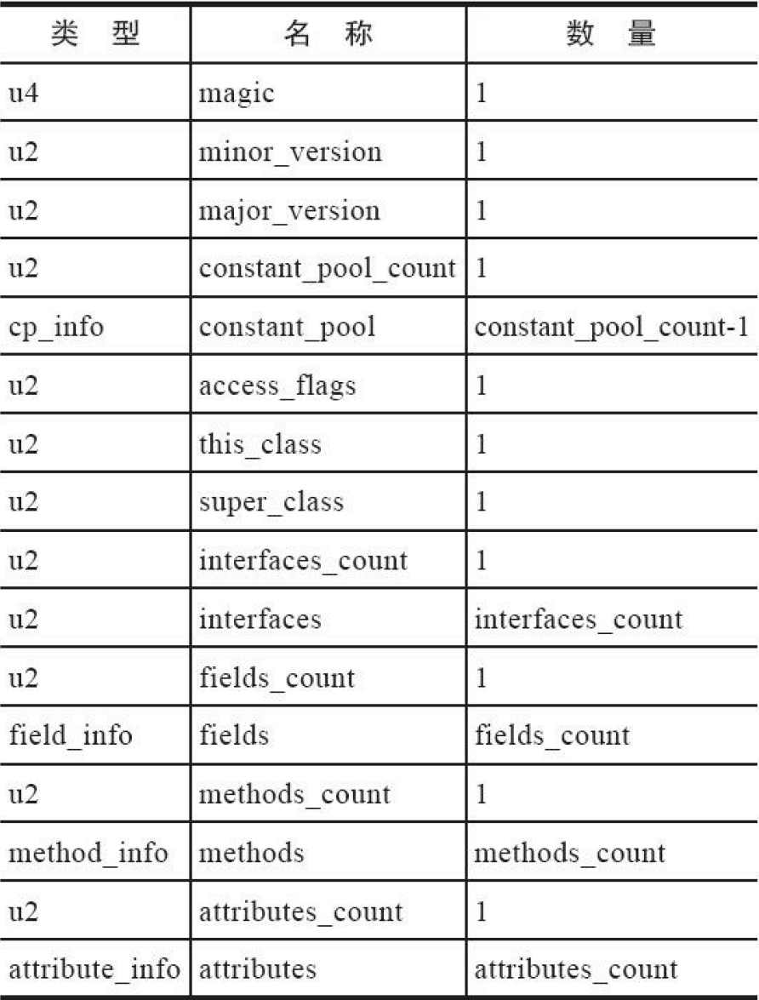
无论是无符号数还是表，当需要描述同一类型但数量不定的多个数据时，经常会使用一个前置的容量计数器加若干个连续的数据项的形式，这时候称这一系列连续的某一类型的数据为某一类型的“集合”。
魔数与Class文件的版本
每个Class文件的头4个字节被称为魔数（Magic Number），它的唯一作用是确定这个文件是否为一个能被虚拟机接受的Class文件。。Class文件的魔数取得很有“浪漫气息”，值为0xCAFEBABE。
紧接着魔数的4个字节存储的是Class文件的版本号：第5和第6个字节是次版本号（MinorVersion），第7和第8个字节是主版本号（Major Version）。
一则测试代码：
1 | package org.fenixsoft.clazz; |
注：书中作者都是用JDK1.6编译运行的，后文贴图等相关，均会是我通过JDK1.9编译运行
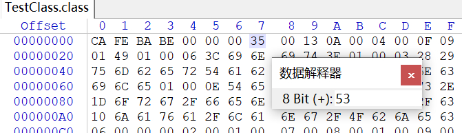
如书中所述：开头4个字节的十六进制表示是0xCAFEBABE，代表次版本号的第5个和第6个字节值为0x0000，而主版本号的值为0x0035，也即是十进制的53，也就是支持JDK1.9版本
关于次版本号：而到了JDK 12时期，由于JDK提供的功能集已经非常庞大，有一些复杂的新特性需要以“公测”的形式放出，所以设计者重新启用了副版本号，将它用于标识“技术预览版”功能特性的支持。如果Class文件中使用了该版本JDK尚未列入正式特性清单中的预览功能，则必须把次版本号标识为65535，以便Java虚拟机在加载类文件时能够区分出来。
常量池
紧接着主、次版本号之后的是常量池入口，常量池可以比喻为Class文件里的资源仓库，它是Class文件结构中与其他项目关联最多的数据，通常也是占用Class文件空间最大的数据项目之一，另外，它还是在Class文件中第一个出现的表类型数据项目。
由于常量池中常量的数量是不固定的，所以在常量池的入口需要放置一项u2类型的数据，代表常量池容量计数值（constant_pool_count）。与Java中语言习惯不同，这个容量计数是从1而不是0开始的。如下图所示：
注 常量池容量（偏移地址：0x00000008）为十六进制数0x0013，即十进制的19，这就代表常量池中有18项常量。（这个跟作者的1.6编译的，不一样，书中标注的有21项，整整少了3项）。
之所以常量池从1开始计数： 设计者将第0项常量空出来是有特殊考虑的，这样做的目的在于，如果后面某些指向常量池的索引值的数据在特定情况下需要表达“不引用任何一个常量池项目”的含义，可以把索引值设置为0来表示。Class文件结构中只有常量池的容量计数是从1开始，对于其他集合类型，包括接口索引集合、字段表集合、方法表集合等的容量计数都与一般习惯相同，是从0开始。
常量池中主要存放两大类常量：字面量（Literal）和符号引用（Symbolic References）。字面量比较接近于Java语言层面的常量概念，如文本字符串、被声明为final的常量值等。而 符号引用则属于编译原理方面 的概念，主要包括下面几类常量：
- 被模块导出或者开放的包（Package）
- 类和接口的全限定名（Fully Qualified Name）
- 字段的名称和描述符（Descriptor）
- 方法的名称和描述符
- 方法句柄和方法类型（Method Handle、Method Type、Invoke Dynamic）
- 动态调用点和动态常量（Dynamically-Computed Call Site、Dynamically-Computed Constant）
Java代码在进行Javac编译的时候，并不像C和C++那样有“连接”这一步骤，而是在虚拟机加载Class文件的时候进行动态连接（具体见第7章）。也就是说，在Class文件中不会保存各个方法、字段最终在内存中的布局信息，这些字段、方法的符号引用不经过虚拟机在运行期转换的话是无法得到真正的内存入口地址，也就无法直接被虚拟机使用的。当虚拟机做类加载时，将会从常量池获得对应的符号引用，再在类创建时或运行时解析、翻译到具体的内存地址之中。
常量池中每一项常量都是一个表，最初常量表中共有11种结构各不相同的表结构数据，后来为了更好地支持动态语言调用，额外增加了4种动态语言相关的常量[1]，为了支持Java模块化系统（Jigsaw），又加入了CONSTANT_M odule_info和CONSTANT_Package_info两个常量，所以截至JDK13，常量表中分别有17种不同类型的常量。
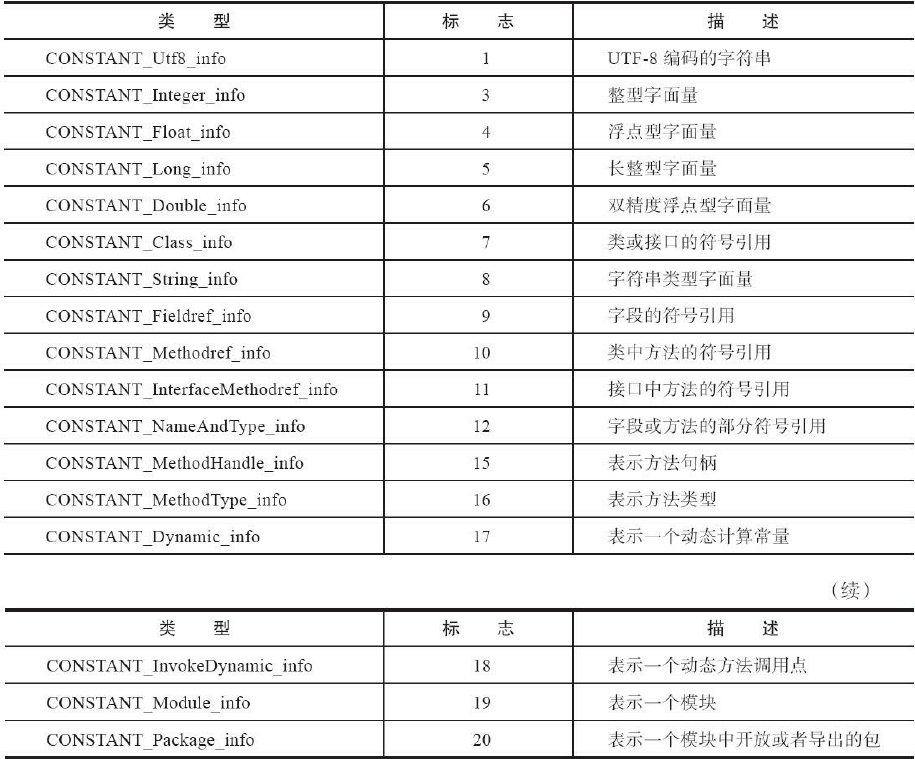
之所以说常量池是最烦琐的数据，是因为这17种常量类型各自有着完全独立的数据结构，两两之间并没有什么共性和联系，因此只能逐项进行讲解。
注：笔者也会根据The Java Virtual Machine Specification Java SE 9 Edition版本中的相关章节描述进行补充说明，由于实际在win10系统下编译跟书本中描述出入有点大，后续关于具体细致内容，主要以书本介绍为主。具体自行编译结果，后续等章节末尾，会单独开小节去研究。
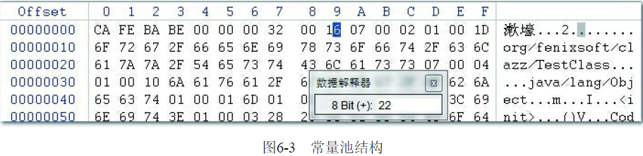
第一项常量，它的标志位（偏移地址：0x0000000A）是0x07，查表的标志列可知这个常量属于 CONSTANT_Class_info类型，此类型的常量代表一个类或者接口的符号引用。CONSTANT_Class_info的结构比较简单：
书中示例用javap分析Class文件字节码：
1 | C:\>javap -verbose TestClass |
访问标志
在常量池结束之后，紧接着的2个字节代表访问标志（access_flags），这个标志用于识别一些类或者接口层次的访问信息，包括：这个Class是类还是接口；是否定义为public类型；是否定义为abstract类型；如果是类的话，是否被声明为final；等等。如下图所示：
分析过程：access_flags中一共有16个标志位可以使用，当前只定义了其中9个，没有使用到的标志位要求一律为零。以代码清单6-1中的代码为例，TestClass是一个普通Java类，不是接口、枚举、注解或者模块，被public关键字修饰但没有被声明为final和abstract，并且它使用了JDK 1.2之后的编译器进行编译，因此它的ACC_PUBLIC、ACC_SUPER标志应当为真，而ACC_FINAL、ACC_INTERFACE、ACC_ABSTRACT、ACC_SYNTHETIC、ACC_ANNOTATION、ACC_ENUM、ACC_M ODULE这七个标志应当为假，因此它的access_flags的值应为：0x0001|0x0020=0x0021。从图6-5中看到，access_flags标志（偏移地址：0x000000EF）的确为0x0021。
类索引、父类索引与接口索引集合
类索引（this_class）和父类索引（super_class）都是一个u2类型的数据，而接口索引集合（interfaces）是一组u2类型的数据的集合，Class文件中由这三项数据来确定该类型的继承关系。类索引用于确定这个类的全限定名，父类索引用于确定这个类的父类的全限定名。由于Java语言不允许多重继承，所以父类索引只有一个，除了java.lang.Object之外，所有的Java类都有父类，因此除了java.lang.Object外，所有Java类的父类索引都不为0。接口索引集合就用来描述这个类实现了哪些接口，这些被实现的接口将按implements关键字（如果这个Class文件表示的是一个接口，则应当是extends关键字）后的接口顺序从左到右排列在接口索引集合中。
字段表集合
字段表（field_info）用于描述接口或者类中声明的变量。Java语言中的“字段”（Field）包括类级变量以及实例级变量，但不包括在方法内部声明的局部变量。读者可以回忆一下在Java语言中描述一个字段可以包含哪些信息。字段可以包括的修饰符有字段的作用域（public、private、protected修饰符）、是实例变量还是类变量（static修饰符）、可变性（final）、并发可见性（volatile修饰符，是否强制从主内存读写）、可否被序列化（transient修饰符）、字段数据类型（基本类型、对象、数组）、字段名称。
方法表集合
Class文件存储格式中对方法的描述与对字段的描述采用了几乎完全一致的方式，方法表的结构如同字段表一样，依次包括访问标志（access_flags）、名称索引（name_index）、描述符索引（descriptor_index）、属性表集合（attributes）几项
属性表集合
对于每一个属性，它的名称都要从常量池中引用一个CONSTANT_Utf8_info类型的常量来表示，而属性值的结构则是完全自定义的，只需要通过一个u4的长度属性去说明属性值所占用的位数即可。
字节码指令简介
Java虚拟机的指令由一个字节长度的、代表着某种特定操作含义的数字（称为操作码，Opcode）以及跟随其后的零至多个代表此操作所需的参数（称为操作数，Operand）构成。由于Java虚拟机采用面向操作数栈而不是面向寄存器的架构（这两种架构的执行过程、区别和影响将在第8章中探讨），所以大多数指令都不包含操作数，只有一个操作码，指令参数都存放在操作数栈中。
大部分指令都没有支持整数类型byte、char和short，甚至没有任何指令支持boolean类型。编译器会在编译期或运行期将byte和short类型的数据带符号扩展（Sign-Extend）为相应的int类型数据，将boolean和char类型数据零位扩展（Zero-Extend）为相应的int类型数据。与之类似，在处理boolean、byte、short和char类型的数组时，也会转换为使用对应的int类型的字节码指令来处理。因此，大多数对于boolean、byte、short和char类型数据的操作，实际上都是使用相应的对int类型作为运算类型（Computational Type）来进行的。
加载和存储指令
加载和存储指令用于将数据在栈帧中的局部变量表和操作数栈（见第2章关于内存区域的介绍）之间来回传输，这类指令包括：
- 将一个局部变量加载到操作栈：
iload、iload_<n>、lload、lload_<n>、fload、fload_<n>、dload、dload_<n>、aload、aload_<n> - 将一个数值从操作数栈存储到局部变量表：
istore、istore_<n>、lstore、lstore_<n>、fstore、fstore_<n>、dstore、dstore_<n>、astore、astore_<n> - 将一个常量加载到操作数栈：
bipush、sipush、ldc、ldc_w、ldc2_w、aconst_null、iconst_m1、iconst_<i>、lconst_<l>、fconst_<f>、dconst_<d> - 扩充局部变量表的访问索引的指令：wide
上面所列举的指令助记符中，有一部分是以尖括号结尾的（例如 iload_<n> ），这些指令助记符实际上代表了一组指令（例如 iload_<n>，它代表了iload_0、iload_1、iload_2和iload_3这几条指令）。这几组指令都是某个带有一个操作数的通用指令（例如iload）的特殊形式，对于这几组特殊指令，它们省略掉了显式的操作数，不需要进行取操作数的动作，因为实际上操作数就隐含在指令中。
运算指令
算术指令用于对两个操作数栈上的值进行某种特定运算，并把结果重新存入到操作栈顶。大体上运算指令可以分为两种：对整型数据进行运算的指令与对浮点型数据进行运算的指令。
无论是哪种算术指令，均是使用Java虚拟机的算术类型来进行计算的，换句话说是不存在直接支持byte、short、char和boolean类型的算术指令，对于上述几种数据的运算，应使用操作int类型的指令代替。所有的算术指令包括：
- 加法指令：iadd、ladd、fadd、dadd
- 减法指令：isub、lsub、fsub、dsub
- 乘法指令：imul、lmul、fmul、dmul
- 除法指令：idiv、ldiv、fdiv、ddiv
- 求余指令：irem、lrem、frem、drem
- 取反指令：ineg、lneg、fneg、dneg
- 位移指令：ishl、ishr、iushr、lshl、lshr、lushr
- 按位或指令：ior、lor
- 按位与指令：iand、land
- 按位异或指令：ixor、lxor
- 局部变量自增指令：iinc
- 比较指令：dcmpg、dcmpl、fcmpg、fcmpl、lcmp
数据运算可能会导致溢出，《Java虚拟机规范》中并没有明确定义过整型数据溢出具体会得到什么计算结果，仅规定了在处理整型数据时，只有除法指令（idiv和ldiv）以及求余指令（irem和lrem）中当 出现除数为零时会导致虚拟机抛出ArithmeticException异常，其余任何整型数运算场景都不应该抛出运行时异常。
类型转化指令
类型转换指令可以将两种不同的数值类型相互转换，这些转换操作一般用于实现用户代码中的显式类型转换操作。
Java虚拟机直接支持（即转换时无须显式的转换指令）以下数值类型的宽化类型转换（Widening Numeric Conversion，即小范围类型向大范围类型的安全转换）：
- int类型到long、float或者double类型
- long类型到float、double类型
- float类型到double类型
与之相对的，处理窄化类型转换（Narrowing Numeric Conversion）时，就必须显式地使用转换指令来完成，这些转换指令包括i2b、i2c、i2s、l2i、f2i、f2l、d2i、d2l和d2f。窄化类型转换可能会导致转换结果产生不同的正负号、不同的数量级的情况，转换过程很可能会导致数值的精度丢失。
对象创建与访问指令
虽然类实例和数组都是对象，但Java虚拟机对类实例和数组的创建与操作使用了不同的字节码指令（在下一章会讲到数组和普通类的类型创建过程是不同的）。对象创建后，就可以通过对象访问指令获取对象实例或者数组实例中的字段或者数组元素，这些指令包括：
-创建类实例的指令：new
-创建数组的指令：newarray、anewarray、multianewarray
-访问类字段（static字段，或者称为类变量）和实例字段（非static字段，或者称为实例变量）的指令：getfield、putfield、getstatic、putstatic
-把一个数组元素加载到操作数栈的指令：baload、caload、saload、iaload、laload、faload、daload、aaload
-将一个操作数栈的值储存到数组元素中的指令：bastore、castore、sastore、iastore、fastore、dastore、aastore
-取数组长度的指令：arraylength
-检查类实例类型的指令：instanceof、checkcast
操作数栈管理指令
如同操作一个普通数据结构中的堆栈那样，Java虚拟机提供了一些用于直接操作操作数栈的指令，包括：
- 将操作数栈的栈顶一个或两个元素出栈：pop、pop2
- 复制栈顶一个或两个数值并将复制值或双份的复制值重新压入栈顶：dup、dup2、dup_x1、dup2_x1、dup_x2、dup2_x2
- 将栈最顶端的两个数值互换：swap
控制转移指令
控制转移指令可以让Java虚拟机有条件或无条件地从指定位置指令（而不是控制转移指令）的下一条指令继续执行程序，从概念模型上理解，可以认为控制指令就是在有条件或无条件地修改PC寄存器的值。控制转移指令包括：
- 条件分支：ifeq、iflt、ifle、ifne、ifgt、ifge、ifnull、ifnonnull、if_icmpeq、if_icmpne、if_icmplt、if_icmpgt、if_icmple、if_icmpge、if_acmpeq和if_acmpne
- 复合条件分支：tableswitch、lookupswitch
- 无条件分支：goto、goto_w、jsr、jsr_w、ret
由于各种类型的比较最终都会转化为int类型的比较操作，int类型比较是否方便、完善就显得尤为重要，而Java虚拟机提供的int类型的条件分支指令是最为丰富、强大的。
方法调用和返回指令
方法调用（分派、执行过程）将在第8章具体讲解，这里仅列举以下五条指令用于方法调用：
- invokevirtual指令：用于调用对象的实例方法，根据对象的实际类型进行分派（虚方法分派），这也是Java语言中最常见的方法分派方式。
- invokeinterface指令：用于调用接口方法，它会在运行时搜索一个实现了这个接口方法的对象，找出适合的方法进行调用。
- invokespecial指令：用于调用一些需要特殊处理的实例方法，包括实例初始化方法、私有方法和父类方法。
- invokestatic指令：用于调用类静态方法（static方法）。
- invokedynamic指令：用于在运行时动态解析出调用点限定符所引用的方法。并执行该方法。前面四条调用指令的分派逻辑都固化在Java虚拟机内部，用户无法改变，而invokedynamic指令的分派逻辑是由用户所设定的引导方法决定的。
异常处理指令
在Java程序中显式抛出异常的操作（throw语句）都由athrow指令来实现，除了用throw语句显式抛出异常的情况之外，《Java虚拟机规范》还规定了许多运行时异常会在其他Java虚拟机指令检测到异常状况时自动抛出。例如前面介绍整数运算中，当除数为零时，虚拟机会在idiv或ldiv指令中抛出ArithmeticException异常。
同步指令
Java虚拟机可以支持方法级的同步和方法内部一段指令序列的同步，这两种同步结构都是使用 管程（Monitor，更常见的是直接将它称为“锁”）来实现的。
注：关于管程的概念，想要具体了解的，需要通过查阅操作系统原理相关的书籍介绍，例如：《Operating Systems: Internals and Design Principles.》（操作系统：精髓与设计原理），第七版中，第5章，5.4节中关于管程的介绍。
方法级的同步是隐式的，无须通过字节码指令来控制，它实现在方法调用和返回操作之中。虚拟机可以从方法常量池中的方法表结构中的ACC_SYNCHRONIZED访问标志得知一个方法是否被声明为同步方法。
当方法调用时，调用指令将会检查方法的ACC_SYNCHRONIZED访问标志是否被设置，如果设置了，执行线程就要求先成功持有管程，然后才能执行方法，最后当方法完成（无论是正常完成还是非正常完成）时释放管程。在方法执行期间，执行线程持有了管程，其他任何线程都无法再获取到同一个管程。如果一个同步方法执行期间抛出了异常，并且在方法内部无法处理此异常，那这个同步方法所持有的管程将在异常抛到同步方法边界之外时自动释放。
同步代码示例：
1 | void onlyMe(Foo f) { |
解释后的字节码序列如下：
1 | Method void onlyMe(Foo) |
公有设计，私有实现
《Java虚拟机规范》描绘了Java虚拟机应有的共同程序存储格式：Class文件格式以及字节码指令集。
虚拟机实现者可以使用这种伸缩性来让Java虚拟机获得更高的性能、更低的内存消耗或者更好的可移植性，选择哪种特性取决于Java虚拟机实现的目标和关注点是什么，虚拟机实现的方式主要有以下两种：
- 将输入的Java虚拟机代码在加载时或执行时翻译成另一种虚拟机的指令集；
- 将输入的Java虚拟机代码在加载时或执行时翻译成宿主机处理程序的本地指令集（即即时编译器代码生成技术）。
第7章 虚拟机类加载机制
概述
Java虚拟机把描述类的数据从Class文件加载到内存，并对数据进行校验、转换解析和初始化，最终形成可以被虚拟机直接使用的Java类型，这个过程被称作 虚拟机的类加载机制。
类加载的时机
一个类型从被加载到虚拟机内存中开始，到卸载出内存为止，它的整个生命周期将会经历加载（Loading）、验证（Verification）、准备（Preparation）、解析（Resolution）、初始化（Initialization）、使用（Using）和卸载（Unloading）七个阶段，其中验证、准备、解析三个部分统称为连接（Linking）。
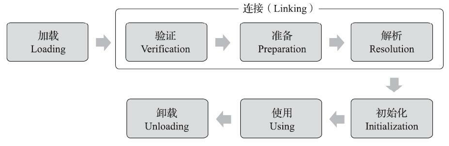
加载、验证、准备、初始化和卸载这五个阶段的顺序是确定的，类型的加载过程必须按照这种顺序按部就班地开始，而 解析阶段则不一定：它在某些情况下可以在初始化阶段之后再开始，这是为了支持Java语言的运行时绑定特性（也称为动态绑定或晚期绑定）
类加载过程的第一个阶段“加载”，《Java虚拟机规范》中并没有进行强制约束，这点可以交给虚拟机的具体实现来自由把握。但是对于初始化阶段，《Java虚拟机规范》则是严格规定了有且只有六种情况必须立即对类进行“初始化”（而加载、验证、准备自然需要在此之前开始）：
- 遇到new、getstatic、putstatic或invokestatic这四条字节码指令时，如果类型没有进行过初始化，则需要先触发其初始化阶段。能够生成这四条指令的典型Java代码场景有：
- 使用new关键字实例化对象的时候。
- 读取或设置一个类型的静态字段（被final修饰、已在编译期把结果放入常量池的静态字段除外）的时候。
- 调用一个类型的静态方法的时候。
- 使用java.lang.reflect包的方法对类型进行反射调用的时候，如果类型没有进行过初始化，则需要先触发其初始化。
- 当初始化类的时候，如果发现其父类还没有进行过初始化，则需要先触发其父类的初始化。
- 当虚拟机启动时，用户需要指定一个要执行的主类（包含main()方法的那个类），虚拟机会先初始化这个主类。
- 当使用JDK 7新加入的动态语言支持时，如果一个java.lang.invoke.M ethodHandle实例最后的解析结果为REF_getStatic、REF_putStatic、REF_invokeStatic、REF_newInvokeSpecial四种类型的方法句柄，并且这个方法句柄对应的类没有进行过初始化，则需要先触发其初始化。
- 当一个接口中定义了JDK 8新加入的默认方法（被default关键字修饰的接口方法）时，如果有这个接口的实现类发生了初始化，那该接口要在其之前被初始化。
对于这六种会触发类型进行初始化的场景，《Java虚拟机规范》中使用了一个非常强烈的限定语——“有且只有”，这六种场景中的行为称为对一个类型进行主动引用。除此之外，所有引用类型的方式都不会触发初始化，称为被动引用。
被动引用例子1
一则代码：
1 | /** |
对于静态字段，只有直接定义这个字段的类才会被初始化，因此通过其子类来引用父类中定义的静态字段，只会触发父类的初始化而不会触发子类的初始化。
被动引用例子2
代码片段：
1 | /** |
运行之后发现没有输出“SuperClass init！”，说明并没有触发类org.fenixsoft.classloading.SuperClass的初始化阶段。但是这段代码里面触发了另一个名为“[Lorg.fenixsoft.classloading.SuperClass”的类的初始化阶段，对于用户代码来说，这并不是一个合法的类型名称，它是一个由虚拟机自动生成的、直接继承于java.lang.Object的子类，创建动作由字节码指令newarray触发。
被动引用例子3
代码片段：
1 | /** |
上述代码运行之后，也没有输出“ConstClass init！”，这是因为虽然在Java源码中确实引用了ConstClass类的常量HELLOWORLD，但其实在编译阶段通过常量传播优化，已经将此常量的值“helloworld”直接存储在NotInitialization类的常量池中，以后NotInitialization对常量ConstClass.HELLOWORLD的引用，实际都被转化为NotInitialization类对自身常量池的引用了。也就是说，实际上NotInitialization的Class文件之中并没有ConstClass类的符号引用入口，这两个类在编译成Class文件后就已不存在任何联系了。
注：关于这个示例，我们可以通过两个途径来作证：第一：前文提到的开启JVM的+TraceClassLoading参数可以看的加载过程。第二：我们通过反编译工具看一下，常量持有的情况
类加载的过程
加载、验证、准备、解析和初始化这五个阶段所执行的具体动作。
加载
“加载”（Loading）阶段是整个“类加载”（Class Loading）过程中的一个阶段，在加载阶段，Java虚拟机需要完成以下三件事情：
1）通过一个类的全限定名来获取定义此类的二进制字节流。
2）将这个字节流所代表的静态存储结构转化为方法区的运行时数据结构。
3）在内存中生成一个代表这个类的java.lang.Class对象，作为方法区这个类的各种数据的访问入口。
加载阶段既可以使用Java虚拟机里内置的引导类加载器来完成，也可以由用户自定义的类加载器去完成，开发人员通过定义自己的类加载器去控制字节流的获取方式 （重写一个类加载器的findClass()或loadClass()方法），实现根据自己的想法来赋予应用程序获取运行代码的动态性。
加载阶段与连接阶段的部分动作（如一部分字节码文件格式验证动作）是交叉进行的，加载阶段尚未完成，连接阶段可能已经开始，但这些夹在加载阶段之中进行的动作，仍然属于连接阶段的一部分，这两个阶段的开始时间仍然保持着固定的先后顺序。
验证
验证是连接阶段的第一步，这一阶段的目的是确保Class文件的字节流中包含的信息符合《Java虚拟机规范》的全部约束要求，保证这些信息被当作代码运行后不会危害虚拟机自身的安全。
验证阶段是非常重要的，这个阶段是否严谨，直接决定了Java虚拟机是否能承受恶意代码的攻击，从代码量和耗费的执行性能的角度上讲，验证阶段的工作量在虚拟机的类加载过程中占了相当大的比重。
从整体上看，验证阶段大致上会完成下面四个阶段的检验动作：文件格式验证、元数据验证、字节码验证和符号引用验证。
文件格式验证
第一阶段要验证字节流是否符合Class文件格式的规范，并且能被当前版本的虚拟机处理。这一阶段可能包括下面这些验证点：
- 是否以魔数0xCAFEBABE开头。
- 主、次版本号是否在当前Java虚拟机接受范围之内。
- 常量池的常量中是否有不被支持的常量类型（检查常量tag标志）。
- 指向常量的各种索引值中是否有指向不存在的常量或不符合类型的常量。
- CONSTANT_Utf8_info型的常量中是否有不符合UTF-8编码的数据。
- Class文件中各个部分及文件本身是否有被删除的或附加的其他信息。
- ……
元数据验证
第二阶段是对字节码描述的信息进行语义分析，以保证其描述的信息符合《Java语言规范》的要求，这个阶段可能包括的验证点如下：
- 这个类是否有父类（除了java.lang.Object之外，所有的类都应当有父类）。
- 这个类的父类是否继承了不允许被继承的类（被final修饰的类）。
- 如果这个类不是抽象类，是否实现了其父类或接口之中要求实现的所有方法。
- 类中的字段、方法是否与父类产生矛盾（例如覆盖了父类的final字段，或者出现不符合规则的方法重载，例如方法参数都一致，但返回值类型却不同等）。
- ……
字节码验证
第三阶段是整个验证过程中最复杂的一个阶段，主要目的是通过数据流分析和控制流分析，确定程序语义是合法的、符合逻辑的。在第二阶段对元数据信息中的数据类型校验完毕以后，这阶段就要对类的 方法体（Class文件中的Code属性）进行校验分析，保证被校验类的方法在运行时不会做出危害虚拟机安全的行为，例如：
- 保证任意时刻操作数栈的数据类型与指令代码序列都能配合工作，例如不会出现类似于“在操作栈放置了一个int类型的数据，使用时却按long类型来加载入本地变量表中”这样的情况。
- 保证任何跳转指令都不会跳转到方法体以外的字节码指令上。
- 保证方法体中的类型转换总是有效的，例如可以把一个子类对象赋值给父类数据类型，这是安全的，但是把父类对象赋值给子类数据类型，甚至把对象赋值给与它毫无继承关系、完全不相干的一个数据类型，则是危险和不合法的。
- ……
注： 这里书中引出了一个经典的离散数学中的问题：“停机问题”(Hlating Problem)，即：即不能通过程序准确地检查出程序是否能在有限的时间之内结束运行。在我们讨论字节码校验的上下文语境里，通俗一点的解释是通过程序去校验程序逻辑是无法做到绝对准确的，不可能用程序来准确判定一段程序是否存在Bug。具体的可以参考维基百科中的相关介绍：Halting_problem，更多的细节过于复杂，只需了解，JDK6之后，Javac编译器和Java虚拟机里进行了一项联合优化，把尽可能多的校验辅助措施挪到Javac编译器里进行。
符号引用验证
最后一个阶段的校验行为发生在虚拟机将符号引用转化为直接引用的时候，这个转化动作将在连接的第三阶段——解析阶段中发生。符号引用验证可以看作是对类自身以外（常量池中的各种符号引用）的各类信息进行匹配性校验，通俗来说就是，该类是否缺少或者被禁止访问它依赖的某些外部类、方法、字段等资源。
准备
准备阶段是正式为类中定义的变量（即静态变量，被static修饰的变量）分配内存并设置类变量初始值的阶段，
关于准备阶段，还有两个容易产生混淆的概念书中有着重强调，首先是这时候进行内存分配的仅包括类变量，而 不包括实例变量，实例变量将会在对象实例化时随着对象一起分配在Java堆中。其次是这里所说的 初始值“通常情况”下是数据类型的零值，假设一个类变量的定义为：
1 | public static int value = 123; |
那变量value在准备阶段过后的初始值为0而不是123，因为这时尚未开始执行任何Java方法，而把value赋值为123的putstatic指令是程序被编译后，存放于类构造器<clinit>()方法之中，所以把 value赋值为123的动作要到类的初始化阶段才会被执行。
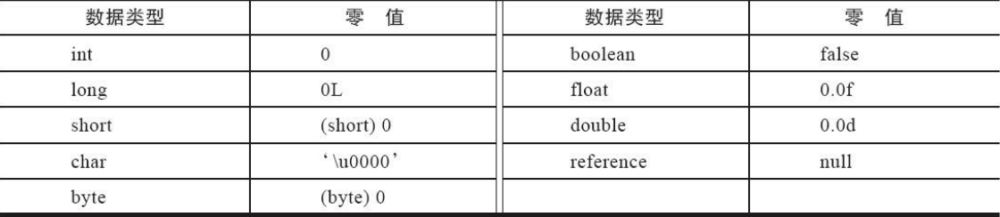
解析
解析阶段是Java虚拟机将常量池内的符号引用替换为直接引用的过程。
初始化
类的初始化阶段是类加载过程的最后一个步骤，之前介绍的几个类加载的动作里，除了在加载阶段用户应用程序可以通过自定义类加载器的方式局部参与外，其余动作都完全由Java虚拟机来主导控制。直到初始化阶段，Java虚拟机才真正开始执行类中编写的Java程序代码，将主导权移交给应用程序。
类加载器
Java虚拟机设计团队有意把类加载阶段中的“通过一个类的全限定名来获取描述该类的二进制字节流”这个动作放到Java虚拟机外部去实现，以便让应用程序自己决定如何去获取所需的类。实现这个动作的代码被称为“类加载器”（Class Loader）。
类与类加载器
比较两个类是否“相等”，只有在这两个类是由同一个类加载器加载的前提下才有意义，否则，即使这两个类来源于同一个Class文件，被同一个Java虚拟机加载，只要加载它们的类加载器不同，那这两个类就必定不相等。这里所指的“相等”，包括代表类的Class对象的equals()方法、isAssignableFrom()方法、isInstance()方法的返回结果，也包括了使用instanceof关键字做对象所属关系判定等各种情况。一段示例，演示intanceof在不同类加载器下运算结果：
1 | package cc.nimbusk.learningjvm.classloading; |
运行结果:
1 | class cc.nimbusk.learningjvm.classloading.ClassLoaderTest |
返回了false。这是因为Java虚拟机中同时存在了两个ClassLoaderTest类，一个是由虚拟机的应用程序类加载器所加载的，另外一个是由我们自定义的类加载器加载的，虽然它们都来自同一个Class文件，但在Java虚拟机中仍然是两个互相独立的类，做对象所属类型检查时的结果自然为false。
双亲委派模型
双亲委派模型站在Java虚拟机的角度来看，只存在两种不同的类加载器：一种是启动类加载器（BootstrapClassLoader），这个类加载器使用C++语言实现，是虚拟机自身的一部分；另外一种就是其他所有的类加载器，这些类加载器都由Java语言实现，独立存在于虚拟机外部，并且全都继承自抽象类 java.lang.ClassLoader。
自JDK 1.2以来，Java一直保持着 三层类加载器、双亲委派的类加载架构
启动类加载器（Bootstrap Class Loader）
启动类加载器（Bootstrap Class Loader）：前面已经介绍过，这个类加载器负责加载存放在java.lang.ClassLoader.getClassLoader()方法的代码片段，其中的注释和代码实现都明确地说明了以null值来代表引导类加载器的约定规则。
扩展类加载器（Extension Class Loader）
这个类加载器是在类sun.misc.Launcher$ExtClassLoader中以Java代码的形式实现的。它负责加载<JAVA_HOME>\lib\ext目录中，或者被java.ext.dirs系统变量所指定的路径中所有的类库。
应用程序类加载器（Application Class Loader）
这个类加载器由sun.misc.Launcher$AppClassLoader来实现。由于应用程序类加载器是ClassLoader类中的getSystem-ClassLoader()方法的返回值，所以有些场合中也称它为“系统类加载器”。它负责加载用户类路径（ClassPath）上所有的类库，开发者同样可以直接在代码中使用这个类加载器。如果应用程序中没有自定义过自己的类加载器，一般情况下这个就是程序中默认的类加载器。
类加载器的“双亲委派模型（Parents DelegationModel）”。双亲委派模型要求除了顶层的启动类加载器外，其余的类加载器都应有自己的父类加载
器。不过这里类加载器之间的父子关系一般不是以继承（Inheritance）的关系来实现的，而是通常使用组合（Composition）关系来复用父加载器的代码。
双亲委派模型对于保证Java程序的稳定运作极为重要，但它的实现却异常简单，用以实现双亲委派的代码只有短短十余行，全部集中在java.lang.ClassLoader的loadClass()方法之中。
1 | protected synchronized Class<?> loadClass(String name, boolean resolve) throws ClassNotFoundException { |
破坏双亲委派模型
注： 书中列举了几个不是严格按照双亲委派模型来进行的场景，比如早期的JNDI服务需要借助于java.lang.Thread类的setContext-ClassLoader()方法进行设置。以及为了解决这个问题，在JDK6之后提供的 java.util.ServiceLoader 类，以META-INF/services中的配置信息，辅以责任链模式，这才算是给SPI的加载提供了一种相对合理的解决方案。
Java模块化系统
在JDK 9中引入的Java模块化系统（Java Platform Module System，JPMS）是对Java技术的一次重要升级，为了能够实现模块化的关键目标——可配置的封装隔离机制，Java虚拟机对类加载架构也做出了相应的变动调整，才使模块化系统得以顺利地运作。JDK 9的模块不仅仅像之前的JAR包那样只是简单地充当代码的容器，除了代码外，Java的模块定义还包含以下内容：
- 依赖其他模块的列表。
- 导出的包列表，即其他模块可以使用的列表。
- 开放的包列表，即其他模块可反射访问模块的列表。
- 使用的服务列表。
- 提供服务的实现列表。
模块的兼容性
为了使可配置的封装隔离机制能够兼容传统的类路径查找机制，JDK 9提出了与“类路径”（ClassPath）相对应的“模块路径”（ModulePath）的概念。
第8章 虚拟机字节码执行引擎
运行时栈帧结构
Java虚拟机以方法作为最基本的执行单元，“栈帧”（Stack Frame）则是用于支持虚拟机进行方法调用和方法执行背后的数据结构，它也是虚拟机运行时数据区中的虚拟机栈（Virtual MachineStack）的栈元素。
每一个栈帧都包括了局部变量表、操作数栈、动态连接、方法返回地址和一些额外的附加信息。在编译Java程序源码的时候，栈帧中需要多大的局部变量表，需要多深的操作数栈就已经被分析计算出来，并且写入到方法表的Code属性之中。
对于执行引擎来讲，在活动线程中，只有位于栈顶的方法才是在运行的，只有位于栈顶的栈帧才是生效的，其被称为“当前栈帧”（Current Stack Frame），与这个栈帧所关联的方法被称为“当前方法”（Current Method）。
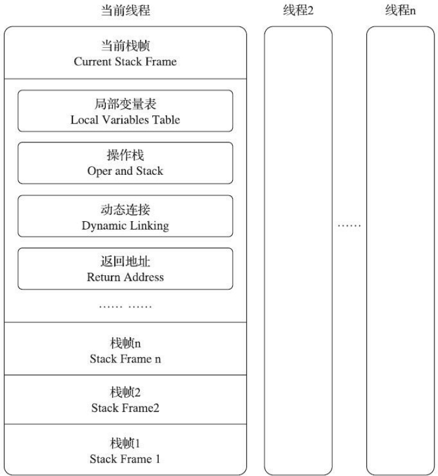
局部变量表
局部变量表（Local Variables Table）是一组变量值的存储空间，用于存放方法参数和方法内部定义的局部变量。在Java程序被编译为Class文件时，就在方法的Code属性的max_locals数据项中确定了该方法所需分配的局部变量表的最大容量。
操作数栈
操作数栈（Operand Stack）也常被称为操作栈，它是一个后入先出（Last In First Out，LIFO）栈。同局部变量表一样，操作数栈的最大深度也在编译的时候被写入到Code属性的max_stacks数据项之中。操作数栈的每一个元素都可以是包括long和double在内的任意Java数据类型。32位数据类型所占的栈容量为1，64位数据类型所占的栈容量为2。
引用
[1] 关于JLS()与JVMS(Java Virtual Machine Specification)发行版本地址：https://docs.oracle.com/javase/specs/